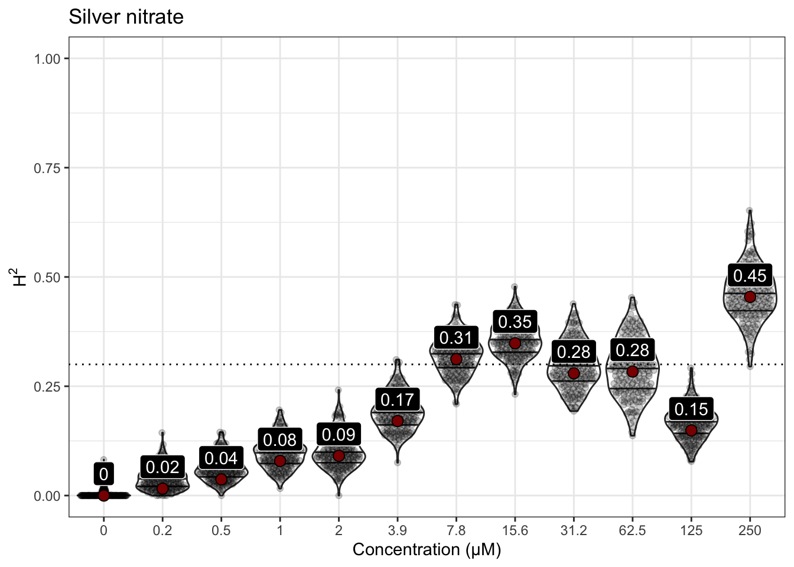
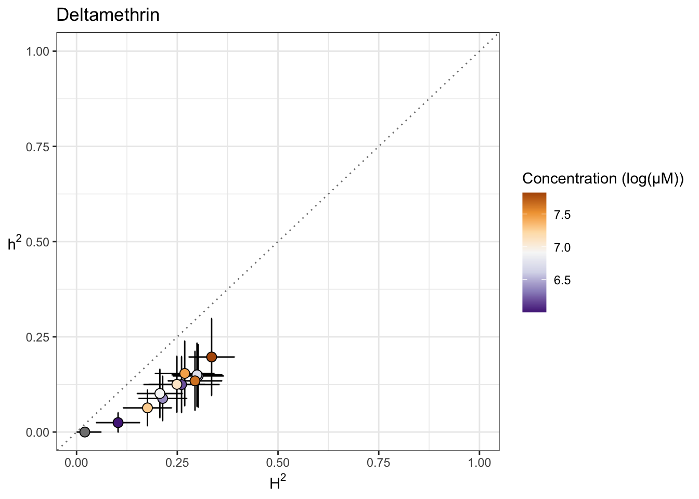
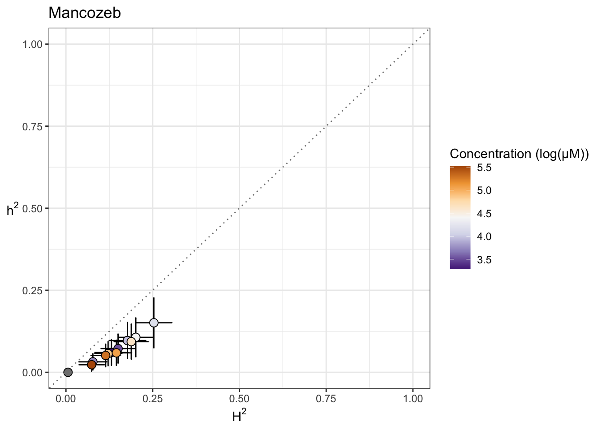

Heritability Analyses
Last updated: 2021-04-19
Checks: 6 1
Knit directory: toxin_dose_responses/
This reproducible R Markdown analysis was created with workflowr (version 1.6.2). The Checks tab describes the reproducibility checks that were applied when the results were created. The Past versions tab lists the development history.
Great! Since the R Markdown file has been committed to the Git repository, you know the exact version of the code that produced these results.
Great job! The global environment was empty. Objects defined in the global environment can affect the analysis in your R Markdown file in unknown ways. For reproduciblity it’s best to always run the code in an empty environment.
The command set.seed(20210305) was run prior to running the code in the R Markdown file. Setting a seed ensures that any results that rely on randomness, e.g. subsampling or permutations, are reproducible.
Great job! Recording the operating system, R version, and package versions is critical for reproducibility.
Nice! There were no cached chunks for this analysis, so you can be confident that you successfully produced the results during this run.
Using absolute paths to the files within your workflowr project makes it difficult for you and others to run your code on a different machine. Change the absolute path(s) below to the suggested relative path(s) to make your code more reproducible.
| absolute | relative |
|---|---|
| ~/Documents/projects/toxin_dose_responses/ | . |
Great! You are using Git for version control. Tracking code development and connecting the code version to the results is critical for reproducibility.
The results in this page were generated with repository version 26547e8. See the Past versions tab to see a history of the changes made to the R Markdown and HTML files.
Note that you need to be careful to ensure that all relevant files for the analysis have been committed to Git prior to generating the results (you can use wflow_publish or wflow_git_commit). workflowr only checks the R Markdown file, but you know if there are other scripts or data files that it depends on. Below is the status of the Git repository when the results were generated:
Ignored files:
Ignored: .DS_Store
Ignored: .Rhistory
Ignored: analysis/.DS_Store
Ignored: output/.DS_Store
Untracked files:
Untracked: code/toxin.geno.matrix.sh
Untracked: data/drugclasses.csv
Untracked: data/tx.doses.mappings.numbers
Untracked: output/2,4-D_EC.plot.png
Untracked: output/2,4-D_EC10.csv
Untracked: output/2,4-D_EC50.csv
Untracked: output/2,4-D_EC90.csv
Untracked: output/2,4-D_EC90.plot.png
Untracked: output/3model.heatmap.png
Untracked: output/4model.heatmap.png
Untracked: output/Aldicarb_EC.plot.png
Untracked: output/Aldicarb_EC10.csv
Untracked: output/Aldicarb_EC50.csv
Untracked: output/Aldicarb_EC90.csv
Untracked: output/Aldicarb_EC90.plot.png
Untracked: output/Arsenic trioxide_EC.plot.png
Untracked: output/Arsenic trioxide_EC10.csv
Untracked: output/Arsenic trioxide_EC90.plot.png
Untracked: output/Atrazine_EC.plot.png
Untracked: output/Atrazine_EC10.csv
Untracked: output/Atrazine_EC50.csv
Untracked: output/Atrazine_EC90.plot.png
Untracked: output/Atrazine_MDHD.junk.png
Untracked: output/Cadmium dichloride_EC.plot.png
Untracked: output/Cadmium dichloride_EC10.csv
Untracked: output/Cadmium dichloride_EC50.csv
Untracked: output/Cadmium dichloride_EC90.csv
Untracked: output/Cadmium dichloride_EC90.plot.png
Untracked: output/Cadmium dichloride_MDHD.junk.png
Untracked: output/Carbaryl_EC.plot.png
Untracked: output/Carbaryl_EC10.csv
Untracked: output/Carbaryl_EC50.csv
Untracked: output/Carbaryl_EC90.csv
Untracked: output/Carbaryl_EC90.plot.png
Untracked: output/Carboxin_EC.plot.png
Untracked: output/Carboxin_EC10.csv
Untracked: output/Carboxin_EC50.csv
Untracked: output/Carboxin_EC90.csv
Untracked: output/Carboxin_EC90.plot.png
Untracked: output/Chlorfenapyr_EC.plot.png
Untracked: output/Chlorfenapyr_EC10.csv
Untracked: output/Chlorfenapyr_EC50.csv
Untracked: output/Chlorfenapyr_EC90.csv
Untracked: output/Chlorfenapyr_EC90.plot.png
Untracked: output/Chlorothalonil_EC.plot.png
Untracked: output/Chlorothalonil_EC10.csv
Untracked: output/Chlorothalonil_EC50.csv
Untracked: output/Chlorothalonil_EC90.csv
Untracked: output/Chlorothalonil_EC90.plot.png
Untracked: output/Chlorpyrifos_EC.plot.png
Untracked: output/Chlorpyrifos_EC10.csv
Untracked: output/Chlorpyrifos_EC50.csv
Untracked: output/Chlorpyrifos_EC90.csv
Untracked: output/Chlorpyrifos_EC90.plot.png
Untracked: output/Copper(II) chloride_EC.plot.png
Untracked: output/Copper(II) chloride_EC10.csv
Untracked: output/Copper(II) chloride_EC50.csv
Untracked: output/Copper(II) chloride_EC90.csv
Untracked: output/Copper(II) chloride_EC90.plot.png
Untracked: output/Deltamethrin_EC.plot.png
Untracked: output/Deltamethrin_EC10.csv
Untracked: output/Deltamethrin_EC50.csv
Untracked: output/Deltamethrin_EC90.csv
Untracked: output/Deltamethrin_EC90.plot.png
Untracked: output/EC10.strain.comp.Carbamate Insecticide.png
Untracked: output/EC10.strain.comp.Flame Retardant.png
Untracked: output/EC10.strain.comp.Fungicide.png
Untracked: output/EC10.strain.comp.Heavy Metal.png
Untracked: output/EC10.strain.comp.Herbicide.png
Untracked: output/EC10.strain.comp.Organophosphate insecticide.png
Untracked: output/EC10.strain.comp.Pro-insecticide.png
Untracked: output/EC10.strain.comp.Synthetic Pyrethroid Insecticide.png
Untracked: output/EC10.strain.comp.png
Untracked: output/EC10.survey.png
Untracked: output/EC90.strain.comp.Carbamate Insecticide.png
Untracked: output/EC90.strain.comp.Flame Retardant.png
Untracked: output/EC90.strain.comp.Fungicide.png
Untracked: output/EC90.strain.comp.Heavy Metal.png
Untracked: output/EC90.strain.comp.Herbicide.png
Untracked: output/EC90.strain.comp.Organophosphate insecticide.png
Untracked: output/EC90.strain.comp.Pro-insecticide.png
Untracked: output/EC90.strain.comp.Synthetic Pyrethroid Insecticide.png
Untracked: output/H2.plot.20210306.png
Untracked: output/H2.plot.20210308.png
Untracked: output/H2.plot.20210314.png
Untracked: output/Lead(II) nitrate_EC.plot.png
Untracked: output/Lead(II) nitrate_EC10.csv
Untracked: output/Lead(II) nitrate_EC90.plot.png
Untracked: output/Malathion_EC.plot.png
Untracked: output/Malathion_EC10.csv
Untracked: output/Malathion_EC50.csv
Untracked: output/Malathion_EC90.csv
Untracked: output/Malathion_EC90.plot.png
Untracked: output/Mancozeb_EC.plot.png
Untracked: output/Mancozeb_EC10.csv
Untracked: output/Mancozeb_EC50.csv
Untracked: output/Mancozeb_EC90.csv
Untracked: output/Mancozeb_EC90.plot.png
Untracked: output/Manganese dichloride_EC.plot.png
Untracked: output/Manganese dichloride_EC10.csv
Untracked: output/Manganese dichloride_EC50.csv
Untracked: output/Manganese dichloride_EC90.csv
Untracked: output/Manganese dichloride_EC90.plot.png
Untracked: output/Methomyl_EC.plot.png
Untracked: output/Methomyl_EC10.csv
Untracked: output/Methomyl_EC50.csv
Untracked: output/Methomyl_EC90.csv
Untracked: output/Methomyl_EC90.plot.png
Untracked: output/Methylmercury dichloride_EC.plot.png
Untracked: output/Methylmercury dichloride_EC10.csv
Untracked: output/Methylmercury dichloride_EC50.csv
Untracked: output/Methylmercury dichloride_EC90.csv
Untracked: output/Methylmercury dichloride_EC90.plot.png
Untracked: output/Nickel dichloride_EC.plot.png
Untracked: output/Nickel dichloride_EC10.csv
Untracked: output/Nickel dichloride_EC50.csv
Untracked: output/Nickel dichloride_EC90.csv
Untracked: output/Nickel dichloride_EC90.plot.png
Untracked: output/Paraquat_EC.plot.png
Untracked: output/Paraquat_EC10.csv
Untracked: output/Paraquat_EC50.csv
Untracked: output/Paraquat_EC90.csv
Untracked: output/Paraquat_EC90.plot.png
Untracked: output/Propoxur_EC.plot.png
Untracked: output/Propoxur_EC10.csv
Untracked: output/Propoxur_EC50.csv
Untracked: output/Propoxur_EC90.csv
Untracked: output/Propoxur_EC90.plot.png
Untracked: output/Pyraclostrobin_EC.plot.png
Untracked: output/Pyraclostrobin_EC10.csv
Untracked: output/Pyraclostrobin_EC50.csv
Untracked: output/Pyraclostrobin_EC90.csv
Untracked: output/Pyraclostrobin_EC90.plot.png
Untracked: output/Pyraclostrobin_MDHD.junk.png
Untracked: output/Silver nitrate_EC.plot.png
Untracked: output/Silver nitrate_EC10.csv
Untracked: output/Silver nitrate_EC50.csv
Untracked: output/Silver nitrate_EC90.csv
Untracked: output/Silver nitrate_EC90.plot.png
Untracked: output/Triphenyl phosphate_EC.plot.png
Untracked: output/Triphenyl phosphate_EC10.csv
Untracked: output/Triphenyl phosphate_EC50.csv
Untracked: output/Triphenyl phosphate_EC90.csv
Untracked: output/Triphenyl phosphate_EC90.plot.png
Untracked: output/Triphenyl phosphate_MDHD.junk.png
Untracked: output/Zinc dichloride_EC.plot.png
Untracked: output/Zinc dichloride_EC10.csv
Untracked: output/Zinc dichloride_EC50.csv
Untracked: output/Zinc dichloride_EC90.csv
Untracked: output/Zinc dichloride_EC90.plot.png
Untracked: output/carb.DRCs.png
Untracked: output/cv.control.wells.csv
Untracked: output/fungi.DRCs.png
Untracked: output/herb.DRCs.png
Untracked: output/manganese_toxin23_p57.png
Untracked: output/metal.DRCs.png
Untracked: output/organophosphate.DRCs.png
Untracked: output/toxicants.8strains.EC90.csv
Untracked: output/toxicants.8strains.csv
Unstaged changes:
Modified: analysis/doseresponsemodels.Rmd
Note that any generated files, e.g. HTML, png, CSS, etc., are not included in this status report because it is ok for generated content to have uncommitted changes.
These are the previous versions of the repository in which changes were made to the R Markdown (analysis/heritability.Rmd) and HTML (docs/heritability.html) files. If you’ve configured a remote Git repository (see ?wflow_git_remote), click on the hyperlinks in the table below to view the files as they were in that past version.
| File | Version | Author | Date | Message |
|---|---|---|---|---|
| Rmd | 26547e8 | sam-widmayer | 2021-04-19 | integrate toxin27A |
| html | bc5c5b5 | sam-widmayer | 2021-04-09 | Build site. |
| Rmd | 5cdca37 | sam-widmayer | 2021-04-09 | toxin26A and tx group analyses |
| html | 19f2802 | sam-widmayer | 2021-03-29 | Build site. |
| Rmd | ecf1af1 | sam-widmayer | 2021-03-29 | integrate toxin24A |
| html | a41a855 | sam-widmayer | 2021-03-25 | Build site. |
| Rmd | a6438e9 | sam-widmayer | 2021-03-25 | fix bootstrap bug |
| html | 0280cf4 | sam-widmayer | 2021-03-24 | Build site. |
| Rmd | 8ba0e4b | sam-widmayer | 2021-03-24 | read in geno matrix |
| Rmd | cdb9d3e | sam-widmayer | 2021-03-24 | narrow sense herits and plotting |
| html | 0e83f2b | sam-widmayer | 2021-03-24 | Build site. |
| Rmd | 75da486 | sam-widmayer | 2021-03-24 | progress meeting updates |
| Rmd | 7d105e2 | sam-widmayer | 2021-03-24 | progress meeting updates |
| html | a451b2a | sam-widmayer | 2021-03-17 | Build site. |
| Rmd | 5d61c5a | sam-widmayer | 2021-03-17 | fix NA bug H2.plot |
| Rmd | 576f962 | sam-widmayer | 2021-03-17 | show H2 bootstrap distributions |
| html | 4bcbcdd | sam-widmayer | 2021-03-14 | Build site. |
| Rmd | bdfa65f | sam-widmayer | 2021-03-14 | integrate toxin22 results |
| html | 212e0ae | sam-widmayer | 2021-03-08 | Build site. |
| html | cb6e132 | sam-widmayer | 2021-03-06 | Build site. |
| Rmd | 46c9647 | sam-widmayer | 2021-03-06 | static working directory |
| Rmd | 41bdaa0 | sam-widmayer | 2021-03-05 | dynamic working directory |
| Rmd | 0c9d312 | sam-widmayer | 2021-03-05 | initiate toxin DRC analysis repo |
Silver nitrate
Version out of date. Please update sommer to the newest version using:
install.packages('sommer') in a new session
Use the 'date.warning' argument to disable the warning message.iteration LogLik wall cpu(sec) restrained
1 -95.904 11:48:39 0 0
2 -93.4149 11:48:39 0 0
3 -89.0813 11:48:39 0 1
4 -88 11:48:39 0 1
5 -88 11:48:39 0 1
Version out of date. Please update sommer to the newest version using:
install.packages('sommer') in a new session
Use the 'date.warning' argument to disable the warning message.iteration LogLik wall cpu(sec) restrained
1 -87.2917 11:48:46 0 0
2 -85.9505 11:48:46 0 0
3 -84.7993 11:48:46 0 0
4 -84.5316 11:48:46 0 0
5 -84.5306 11:48:46 0 0
Version out of date. Please update sommer to the newest version using:
install.packages('sommer') in a new session
Use the 'date.warning' argument to disable the warning message.iteration LogLik wall cpu(sec) restrained
1 -92.2 11:48:52 0 0
2 -90.7807 11:48:52 0 0
3 -89.4282 11:48:53 1 0
4 -88.9154 11:48:53 1 0
5 -88.8664 11:48:53 1 0
6 -88.8593 11:48:53 1 0
7 -88.858 11:48:53 1 0
8 -88.8578 11:48:53 1 0
Version out of date. Please update sommer to the newest version using:
install.packages('sommer') in a new session
Use the 'date.warning' argument to disable the warning message.iteration LogLik wall cpu(sec) restrained
1 -88.6823 11:48:59 0 0
2 -88.1421 11:48:59 0 0
3 -87.8224 11:48:59 0 0
4 -87.7574 11:48:59 0 0
5 -87.755 11:48:59 0 0
6 -87.7549 11:48:59 0 0
Version out of date. Please update sommer to the newest version using:
install.packages('sommer') in a new session
Use the 'date.warning' argument to disable the warning message.iteration LogLik wall cpu(sec) restrained
1 -87.5731 11:49:6 0 0
2 -87.0769 11:49:6 0 0
3 -86.7642 11:49:6 0 0
4 -86.6846 11:49:6 0 0
5 -86.6794 11:49:6 0 0
6 -86.6791 11:49:6 0 0
Version out of date. Please update sommer to the newest version using:
install.packages('sommer') in a new session
Use the 'date.warning' argument to disable the warning message.iteration LogLik wall cpu(sec) restrained
1 -87.9664 11:49:12 0 0
2 -87.1235 11:49:12 0 0
3 -86.5436 11:49:12 0 0
4 -86.4171 11:49:12 0 0
5 -86.4138 11:49:12 0 0
6 -86.4138 11:49:12 0 0
Version out of date. Please update sommer to the newest version using:
install.packages('sommer') in a new session
Use the 'date.warning' argument to disable the warning message.iteration LogLik wall cpu(sec) restrained
1 -77.6235 11:49:19 0 0
2 -77.6193 11:49:19 0 0
3 -77.6177 11:49:19 0 0
4 -77.6174 11:49:19 0 0
Version out of date. Please update sommer to the newest version using:
install.packages('sommer') in a new session
Use the 'date.warning' argument to disable the warning message.iteration LogLik wall cpu(sec) restrained
1 -78.8937 11:49:25 0 0
2 -78.8776 11:49:25 0 0
3 -78.8711 11:49:25 0 0
4 -78.8701 11:49:25 0 0
5 -78.87 11:49:26 1 0
Version out of date. Please update sommer to the newest version using:
install.packages('sommer') in a new session
Use the 'date.warning' argument to disable the warning message.iteration LogLik wall cpu(sec) restrained
1 -77.0455 11:49:32 0 0
2 -77.0357 11:49:32 0 0
3 -77.0318 11:49:32 0 0
4 -77.0313 11:49:32 0 0
Version out of date. Please update sommer to the newest version using:
install.packages('sommer') in a new session
Use the 'date.warning' argument to disable the warning message.iteration LogLik wall cpu(sec) restrained
1 -79.3995 11:49:39 0 0
2 -79.2414 11:49:39 0 0
3 -79.161 11:49:39 0 0
4 -79.1432 11:49:39 0 0
5 -79.142 11:49:39 0 0
6 -79.1419 11:49:39 0 0
Version out of date. Please update sommer to the newest version using:
install.packages('sommer') in a new session
Use the 'date.warning' argument to disable the warning message.iteration LogLik wall cpu(sec) restrained
1 -87.318 11:49:46 0 0
2 -86.2785 11:49:46 0 0
3 -85.4779 11:49:46 0 0
4 -85.2671 11:49:46 0 0
5 -85.2582 11:49:46 0 0
6 -85.2578 11:49:46 0 0
Version out of date. Please update sommer to the newest version using:
install.packages('sommer') in a new session
Use the 'date.warning' argument to disable the warning message.iteration LogLik wall cpu(sec) restrained
1 -50.1332 11:49:53 0 0
2 -49.8179 11:49:53 0 0
3 -49.7277 11:49:53 0 0
4 -49.7165 11:49:53 0 0
5 -49.7162 11:49:53 0 0


Cadmium dichloride
Version out of date. Please update sommer to the newest version using:
install.packages('sommer') in a new session
Use the 'date.warning' argument to disable the warning message.iteration LogLik wall cpu(sec) restrained
1 -48.8197 11:50:2 0 0
2 -46.2682 11:50:2 0 1
3 -43 11:50:2 0 1
4 -43 11:50:2 0 1
Version out of date. Please update sommer to the newest version using:
install.packages('sommer') in a new session
Use the 'date.warning' argument to disable the warning message.iteration LogLik wall cpu(sec) restrained
1 -47.1527 11:50:8 0 0
2 -45.3266 11:50:8 0 0
3 -43.8089 11:50:8 0 0
4 -43.8025 11:50:8 0 0
5 -43.7974 11:50:8 0 0
6 -43.7949 11:50:8 0 0
7 -43.7931 11:50:8 0 0
8 -43.7922 11:50:8 0 0
[1] "Only 1 Strain Sampled in Bootstrap - Skipping"
Version out of date. Please update sommer to the newest version using:
install.packages('sommer') in a new session
Use the 'date.warning' argument to disable the warning message.iteration LogLik wall cpu(sec) restrained
1 -47.1503 11:50:15 0 0
2 -46.0676 11:50:15 0 0
3 -45.2417 11:50:15 0 0
4 -45.0008 11:50:15 0 0
5 -44.9738 11:50:15 0 0
6 -44.9684 11:50:15 0 0
7 -44.9671 11:50:15 0 0
8 -44.9667 11:50:15 0 0
[1] "Only 1 Strain Sampled in Bootstrap - Skipping"
[1] "Only 1 Strain Sampled in Bootstrap - Skipping"
Version out of date. Please update sommer to the newest version using:
install.packages('sommer') in a new session
Use the 'date.warning' argument to disable the warning message.iteration LogLik wall cpu(sec) restrained
1 -44.73 11:50:21 0 0
2 -44.1217 11:50:21 0 0
3 -43.6608 11:50:21 0 0
4 -43.4598 11:50:21 0 0
5 -43.4109 11:50:21 0 0
6 -43.3964 11:50:21 0 0
7 -43.3917 11:50:21 0 0
8 -43.39 11:50:21 0 0
9 -43.3894 11:50:21 0 0
Version out of date. Please update sommer to the newest version using:
install.packages('sommer') in a new session
Use the 'date.warning' argument to disable the warning message.iteration LogLik wall cpu(sec) restrained
1 -46.8831 11:50:28 0 0
2 -46.3594 11:50:28 0 0
3 -46.0067 11:50:28 0 0
4 -45.8907 11:50:28 0 0
5 -45.8746 11:50:28 0 0
6 -45.872 11:50:28 0 0
7 -45.8716 11:50:28 0 0
Version out of date. Please update sommer to the newest version using:
install.packages('sommer') in a new session
Use the 'date.warning' argument to disable the warning message.iteration LogLik wall cpu(sec) restrained
1 -46.5707 11:50:34 0 0
2 -45.2931 11:50:34 0 0
3 -44.1027 11:50:34 0 0
4 -43.5406 11:50:34 0 1
5 -43.5 11:50:34 0 1
6 -43.5 11:50:34 0 1
Version out of date. Please update sommer to the newest version using:
install.packages('sommer') in a new session
Use the 'date.warning' argument to disable the warning message.iteration LogLik wall cpu(sec) restrained
1 -45.2457 11:50:41 0 0
2 -44.7449 11:50:41 0 0
3 -44.2999 11:50:41 0 0
4 -43.99 11:50:41 0 0
5 -43.814 11:50:41 0 0
6 -43.6808 11:50:41 0 0
7 -43.5581 11:50:41 0 1
8 -43.5 11:50:41 0 1
9 -43.5 11:50:41 0 1
[1] "Only 1 Strain Sampled in Bootstrap - Skipping"
Version out of date. Please update sommer to the newest version using:
install.packages('sommer') in a new session
Use the 'date.warning' argument to disable the warning message.iteration LogLik wall cpu(sec) restrained
1 -44.9009 11:50:47 0 0
2 -44.1345 11:50:47 0 0
3 -43.713 11:50:47 0 0
4 -43.6744 11:50:47 0 0
5 -43.6742 11:50:47 0 0
Version out of date. Please update sommer to the newest version using:
install.packages('sommer') in a new session
Use the 'date.warning' argument to disable the warning message.iteration LogLik wall cpu(sec) restrained
1 -34.7837 11:50:53 0 0
2 -34.6414 11:50:53 0 0
3 -34.6036 11:50:53 0 0
4 -34.6026 11:50:53 0 0
5 -34.6026 11:50:53 0 0
Version out of date. Please update sommer to the newest version using:
install.packages('sommer') in a new session
Use the 'date.warning' argument to disable the warning message.iteration LogLik wall cpu(sec) restrained
1 -27.5031 11:51:0 0 0
2 -27.4097 11:51:0 0 0
3 -27.3878 11:51:0 0 0
4 -27.386 11:51:0 0 0
5 -27.386 11:51:0 0 0
Version out of date. Please update sommer to the newest version using:
install.packages('sommer') in a new session
Use the 'date.warning' argument to disable the warning message.iteration LogLik wall cpu(sec) restrained
1 -27.5236 11:51:6 0 0
2 -27.4673 11:51:6 0 0
3 -27.4498 11:51:6 0 0
4 -27.4476 11:51:6 0 0
5 -27.4476 11:51:6 0 0
[1] "Only 1 Strain Sampled in Bootstrap - Skipping"
[1] "Only 1 Strain Sampled in Bootstrap - Skipping"
[1] "Only 1 Strain Sampled in Bootstrap - Skipping"
[1] "Only 1 Strain Sampled in Bootstrap - Skipping"
[1] "Only 1 Strain Sampled in Bootstrap - Skipping"
[1] "Only 1 Strain Sampled in Bootstrap - Skipping"
[1] "Only 1 Strain Sampled in Bootstrap - Skipping"
[1] "Only 1 Strain Sampled in Bootstrap - Skipping"
[1] "Only 1 Strain Sampled in Bootstrap - Skipping"
[1] "Only 1 Strain Sampled in Bootstrap - Skipping"
[1] "Only 1 Strain Sampled in Bootstrap - Skipping"
Version out of date. Please update sommer to the newest version using:
install.packages('sommer') in a new session
Use the 'date.warning' argument to disable the warning message.iteration LogLik wall cpu(sec) restrained
1 -31.55 11:51:13 0 0
2 -31.3838 11:51:13 0 0
3 -31.3243 11:51:13 0 0
4 -31.3143 11:51:13 0 0
5 -31.3138 11:51:13 0 0
[1] "Only 1 Strain Sampled in Bootstrap - Skipping"


Copper (II) dichloride
Version out of date. Please update sommer to the newest version using:
install.packages('sommer') in a new session
Use the 'date.warning' argument to disable the warning message.iteration LogLik wall cpu(sec) restrained
1 -80.0137 11:51:22 0 0
2 -78.873 11:51:22 0 0
3 -78.1201 11:51:22 0 0
4 -78.0629 11:51:22 0 0
5 -78.0607 11:51:22 0 0
6 -78.0606 11:51:22 0 0
Version out of date. Please update sommer to the newest version using:
install.packages('sommer') in a new session
Use the 'date.warning' argument to disable the warning message.iteration LogLik wall cpu(sec) restrained
1 -125.053 11:51:28 0 0
2 -123.891 11:51:28 0 0
3 -122.974 11:51:28 0 0
4 -122.786 11:51:28 0 0
5 -122.785 11:51:28 0 0
Version out of date. Please update sommer to the newest version using:
install.packages('sommer') in a new session
Use the 'date.warning' argument to disable the warning message.iteration LogLik wall cpu(sec) restrained
1 -129.499 11:51:35 0 0
2 -128.209 11:51:35 0 0
3 -127.047 11:51:35 0 0
4 -126.685 11:51:35 0 0
5 -126.677 11:51:35 0 0
6 -126.677 11:51:35 0 0
Version out of date. Please update sommer to the newest version using:
install.packages('sommer') in a new session
Use the 'date.warning' argument to disable the warning message.iteration LogLik wall cpu(sec) restrained
1 -126.538 11:51:42 0 0
2 -125.409 11:51:42 0 0
3 -124.56 11:51:42 0 0
4 -124.403 11:51:42 0 0
5 -124.402 11:51:42 0 0
Version out of date. Please update sommer to the newest version using:
install.packages('sommer') in a new session
Use the 'date.warning' argument to disable the warning message.iteration LogLik wall cpu(sec) restrained
1 -120.42 11:51:49 0 0
2 -119.955 11:51:49 0 0
3 -119.719 11:51:49 0 0
4 -119.687 11:51:49 0 0
5 -119.687 11:51:49 0 0
Version out of date. Please update sommer to the newest version using:
install.packages('sommer') in a new session
Use the 'date.warning' argument to disable the warning message.iteration LogLik wall cpu(sec) restrained
1 -117.229 11:51:55 0 0
2 -116.794 11:51:55 0 0
3 -116.567 11:51:55 0 0
4 -116.532 11:51:56 1 0
5 -116.532 11:51:56 1 0
Version out of date. Please update sommer to the newest version using:
install.packages('sommer') in a new session
Use the 'date.warning' argument to disable the warning message.iteration LogLik wall cpu(sec) restrained
1 -43.2017 11:52:2 0 0
2 -43.1799 11:52:2 0 0
3 -43.1711 11:52:2 0 0
4 -43.1694 11:52:2 0 0
5 -43.1693 11:52:2 0 0
[1] "Only 1 Strain Sampled in Bootstrap - Skipping"
[1] "Only 1 Strain Sampled in Bootstrap - Skipping"
[1] "Only 1 Strain Sampled in Bootstrap - Skipping"
Version out of date. Please update sommer to the newest version using:
install.packages('sommer') in a new session
Use the 'date.warning' argument to disable the warning message.iteration LogLik wall cpu(sec) restrained
1 -124.735 11:52:8 0 0
2 -123.689 11:52:9 1 0
3 -122.895 11:52:9 1 0
4 -122.721 11:52:9 1 0
5 -122.72 11:52:9 1 0
6 -122.72 11:52:9 1 0
Version out of date. Please update sommer to the newest version using:
install.packages('sommer') in a new session
Use the 'date.warning' argument to disable the warning message.iteration LogLik wall cpu(sec) restrained
1 -121.197 11:52:15 0 0
2 -120.203 11:52:15 0 0
3 -119.467 11:52:15 0 0
4 -119.305 11:52:16 1 0
5 -119.302 11:52:16 1 0
6 -119.302 11:52:16 1 0
Version out of date. Please update sommer to the newest version using:
install.packages('sommer') in a new session
Use the 'date.warning' argument to disable the warning message.iteration LogLik wall cpu(sec) restrained
1 -129.631 11:52:22 0 0
2 -128.197 11:52:22 0 0
3 -126.913 11:52:22 0 0
4 -126.64 11:52:22 0 0
5 -126.64 11:52:22 0 0
Version out of date. Please update sommer to the newest version using:
install.packages('sommer') in a new session
Use the 'date.warning' argument to disable the warning message.iteration LogLik wall cpu(sec) restrained
1 -139.126 11:52:29 0 0
2 -136.656 11:52:29 0 0
3 -132.367 11:52:29 0 1
4 -130 11:52:30 1 1
5 -130 11:52:30 1 1
Version out of date. Please update sommer to the newest version using:
install.packages('sommer') in a new session
Use the 'date.warning' argument to disable the warning message.iteration LogLik wall cpu(sec) restrained
1 -127.368 11:52:36 0 0
2 -125.899 11:52:36 0 0
3 -124.618 11:52:36 0 0
4 -124.422 11:52:36 0 0
5 -124.417 11:52:36 0 0
6 -124.417 11:52:36 0 0


Nickel dichloride
Version out of date. Please update sommer to the newest version using:
install.packages('sommer') in a new session
Use the 'date.warning' argument to disable the warning message.iteration LogLik wall cpu(sec) restrained
1 -121.508 11:52:45 0 0
2 -119.21 11:52:45 0 0
3 -115.572 11:52:45 0 1
4 -113.5 11:52:45 0 1
5 -113.5 11:52:45 0 1
Version out of date. Please update sommer to the newest version using:
install.packages('sommer') in a new session
Use the 'date.warning' argument to disable the warning message.iteration LogLik wall cpu(sec) restrained
1 -123.472 11:52:52 0 0
2 -121.425 11:52:52 0 0
3 -118.748 11:52:52 0 0
4 -117.95 11:52:52 0 0
5 -117.809 11:52:52 0 0
6 -117.77 11:52:52 0 0
7 -117.756 11:52:52 0 0
8 -117.751 11:52:52 0 0
9 -117.75 11:52:52 0 0
10 -117.749 11:52:52 0 0
Version out of date. Please update sommer to the newest version using:
install.packages('sommer') in a new session
Use the 'date.warning' argument to disable the warning message.iteration LogLik wall cpu(sec) restrained
1 -122.759 11:52:59 0 0
2 -121.138 11:52:59 0 0
3 -119.288 11:52:59 0 0
4 -118.028 11:52:59 0 0
5 -117.549 11:52:59 0 1
6 -117.5 11:52:59 0 1
7 -117.5 11:52:59 0 1
Version out of date. Please update sommer to the newest version using:
install.packages('sommer') in a new session
Use the 'date.warning' argument to disable the warning message.iteration LogLik wall cpu(sec) restrained
1 -118.881 11:53:6 0 0
2 -117.84 11:53:6 0 0
3 -116.853 11:53:6 0 0
4 -116.252 11:53:6 0 0
5 -116.001 11:53:6 0 0
6 -115.85 11:53:6 0 0
7 -115.736 11:53:6 0 0
8 -115.632 11:53:6 0 0
9 -115.522 11:53:6 0 1
10 -115.5 11:53:6 0 1
11 -115.5 11:53:6 0 1
Version out of date. Please update sommer to the newest version using:
install.packages('sommer') in a new session
Use the 'date.warning' argument to disable the warning message.iteration LogLik wall cpu(sec) restrained
1 -116.708 11:53:13 0 0
2 -115.698 11:53:13 0 0
3 -114.847 11:53:13 0 0
4 -114.521 11:53:13 0 0
5 -114.481 11:53:13 0 0
6 -114.476 11:53:13 0 0
7 -114.475 11:53:13 0 0
Version out of date. Please update sommer to the newest version using:
install.packages('sommer') in a new session
Use the 'date.warning' argument to disable the warning message.iteration LogLik wall cpu(sec) restrained
1 -115.585 11:53:19 0 0
2 -114.593 11:53:19 0 0
3 -113.777 11:53:19 0 0
4 -113.486 11:53:19 0 0
5 -113.454 11:53:20 1 0
6 -113.45 11:53:20 1 0
7 -113.45 11:53:20 1 0
Version out of date. Please update sommer to the newest version using:
install.packages('sommer') in a new session
Use the 'date.warning' argument to disable the warning message.iteration LogLik wall cpu(sec) restrained
1 -109.651 11:53:26 0 0
2 -107.795 11:53:26 0 0
3 -105.617 11:53:26 0 0
4 -104.579 11:53:26 0 0
5 -104.508 11:53:26 0 1
6 -104.5 11:53:26 0 1
7 -104.5 11:53:26 0 1
Version out of date. Please update sommer to the newest version using:
install.packages('sommer') in a new session
Use the 'date.warning' argument to disable the warning message.iteration LogLik wall cpu(sec) restrained
1 -111.876 11:53:33 0 0
2 -110.986 11:53:33 0 0
3 -110.252 11:53:33 0 0
4 -109.951 11:53:33 0 0
5 -109.9 11:53:33 0 0
6 -109.891 11:53:33 0 0
7 -109.889 11:53:33 0 0
8 -109.889 11:53:33 0 0
Version out of date. Please update sommer to the newest version using:
install.packages('sommer') in a new session
Use the 'date.warning' argument to disable the warning message.iteration LogLik wall cpu(sec) restrained
1 -110.764 11:53:40 0 0
2 -109.515 11:53:40 0 0
3 -108.455 11:53:40 0 0
4 -108.155 11:53:40 0 0
5 -108.143 11:53:40 0 0
6 -108.143 11:53:40 0 0
Version out of date. Please update sommer to the newest version using:
install.packages('sommer') in a new session
Use the 'date.warning' argument to disable the warning message.iteration LogLik wall cpu(sec) restrained
1 -67.4177 11:53:46 0 0
2 -67.0763 11:53:47 1 0
3 -67.0087 11:53:47 1 0
4 -67.0037 11:53:47 1 0
5 -67.0036 11:53:47 1 0
Version out of date. Please update sommer to the newest version using:
install.packages('sommer') in a new session
Use the 'date.warning' argument to disable the warning message.iteration LogLik wall cpu(sec) restrained
1 -21.7098 11:53:53 0 0
2 -19.7432 11:53:53 0 0
3 -19.5529 11:53:53 0 0
4 -19.5443 11:53:53 0 0
5 -19.5443 11:53:53 0 0
[1] "Only 1 Strain Sampled in Bootstrap - Skipping"
[1] "Only 1 Strain Sampled in Bootstrap - Skipping"
[1] "Only 1 Strain Sampled in Bootstrap - Skipping"
[1] "Only 1 Strain Sampled in Bootstrap - Skipping"
[1] "Only 1 Strain Sampled in Bootstrap - Skipping"
Version out of date. Please update sommer to the newest version using:
install.packages('sommer') in a new session
Use the 'date.warning' argument to disable the warning message.iteration LogLik wall cpu(sec) restrained
1 -120.141 11:53:59 0 0
2 -117.665 11:53:59 0 0
3 -113.363 11:53:59 0 1
4 -111.5 11:53:59 0 1
5 -111.5 11:53:59 0 1


Paraquat
Version out of date. Please update sommer to the newest version using:
install.packages('sommer') in a new session
Use the 'date.warning' argument to disable the warning message.iteration LogLik wall cpu(sec) restrained
1 -94.3497 11:54:8 0 0
2 -91.8601 11:54:8 0 0
3 -87.5304 11:54:8 0 1
4 -86.5 11:54:8 0 1
5 -86.5 11:54:8 0 1
Version out of date. Please update sommer to the newest version using:
install.packages('sommer') in a new session
Use the 'date.warning' argument to disable the warning message.iteration LogLik wall cpu(sec) restrained
1 -76.9557 11:54:14 0 0
2 -76.5742 11:54:14 0 0
3 -76.4086 11:54:14 0 0
4 -76.3939 11:54:14 0 0
5 -76.3939 11:54:14 0 0
Version out of date. Please update sommer to the newest version using:
install.packages('sommer') in a new session
Use the 'date.warning' argument to disable the warning message.iteration LogLik wall cpu(sec) restrained
1 -84.4391 11:54:21 0 0
2 -83.8422 11:54:21 0 0
3 -83.542 11:54:21 0 0
4 -83.5123 11:54:21 0 0
5 -83.5123 11:54:21 0 0
Version out of date. Please update sommer to the newest version using:
install.packages('sommer') in a new session
Use the 'date.warning' argument to disable the warning message.iteration LogLik wall cpu(sec) restrained
1 -83.1453 11:54:27 0 0
2 -82.7354 11:54:27 0 0
3 -82.4883 11:54:27 0 0
4 -82.428 11:54:27 0 0
5 -82.4242 11:54:27 0 0
6 -82.424 11:54:27 0 0
Version out of date. Please update sommer to the newest version using:
install.packages('sommer') in a new session
Use the 'date.warning' argument to disable the warning message.iteration LogLik wall cpu(sec) restrained
1 -73.0264 11:54:33 0 0
2 -72.8093 11:54:33 0 0
3 -72.7288 11:54:33 0 0
4 -72.7227 11:54:34 1 0
5 -72.7227 11:54:34 1 0
Version out of date. Please update sommer to the newest version using:
install.packages('sommer') in a new session
Use the 'date.warning' argument to disable the warning message.iteration LogLik wall cpu(sec) restrained
1 -26.112 11:54:40 0 0
2 -23.2014 11:54:40 0 0
3 -22.899 11:54:40 0 0
4 -22.8821 11:54:40 0 0
5 -22.882 11:54:40 0 0
Version out of date. Please update sommer to the newest version using:
install.packages('sommer') in a new session
Use the 'date.warning' argument to disable the warning message.iteration LogLik wall cpu(sec) restrained
1 -25.6661 11:54:46 0 0
2 -20.5234 11:54:46 0 0
3 -19.9642 11:54:46 0 0
4 -19.9292 11:54:46 0 0
5 -19.9289 11:54:46 0 0
Version out of date. Please update sommer to the newest version using:
install.packages('sommer') in a new session
Use the 'date.warning' argument to disable the warning message.iteration LogLik wall cpu(sec) restrained
1 -38.8659 11:54:53 0 0
2 -37.0532 11:54:53 0 0
3 -36.8065 11:54:53 0 0
4 -36.7904 11:54:53 0 0
5 -36.7903 11:54:53 0 0
Version out of date. Please update sommer to the newest version using:
install.packages('sommer') in a new session
Use the 'date.warning' argument to disable the warning message.iteration LogLik wall cpu(sec) restrained
1 -21.5583 11:54:59 0 0
2 -17.3085 11:54:59 0 0
3 -16.7549 11:54:59 0 0
4 -16.7197 11:54:59 0 0
5 -16.7193 11:54:59 0 0
[1] "Only 1 Strain Sampled in Bootstrap - Skipping"
Version out of date. Please update sommer to the newest version using:
install.packages('sommer') in a new session
Use the 'date.warning' argument to disable the warning message.iteration LogLik wall cpu(sec) restrained
1 -13.259 11:55:6 0 0
2 -11.9935 11:55:6 0 0
3 -11.3294 11:55:6 0 0
4 -11.1991 11:55:6 0 0
5 -11.1927 11:55:6 0 0
6 -11.1924 11:55:6 0 0
[1] "Only 1 Strain Sampled in Bootstrap - Skipping"
[1] "Only 1 Strain Sampled in Bootstrap - Skipping"
[1] "Only 1 Strain Sampled in Bootstrap - Skipping"
[1] "Only 1 Strain Sampled in Bootstrap - Skipping"
[1] "Only 1 Strain Sampled in Bootstrap - Skipping"
[1] "Only 1 Strain Sampled in Bootstrap - Skipping"
[1] "Only 1 Strain Sampled in Bootstrap - Skipping"
[1] "Only 1 Strain Sampled in Bootstrap - Skipping"
[1] "Only 1 Strain Sampled in Bootstrap - Skipping"
[1] "Only 1 Strain Sampled in Bootstrap - Skipping"
[1] "Only 1 Strain Sampled in Bootstrap - Skipping"
[1] "Only 1 Strain Sampled in Bootstrap - Skipping"
[1] "Only 1 Strain Sampled in Bootstrap - Skipping"
[1] "Only 1 Strain Sampled in Bootstrap - Skipping"
[1] "Only 1 Strain Sampled in Bootstrap - Skipping"
[1] "Only 1 Strain Sampled in Bootstrap - Skipping"
[1] "Only 1 Strain Sampled in Bootstrap - Skipping"
[1] "Only 1 Strain Sampled in Bootstrap - Skipping"
[1] "Only 1 Strain Sampled in Bootstrap - Skipping"
[1] "Only 1 Strain Sampled in Bootstrap - Skipping"
[1] "Only 1 Strain Sampled in Bootstrap - Skipping"
[1] "Only 1 Strain Sampled in Bootstrap - Skipping"
[1] "Only 1 Strain Sampled in Bootstrap - Skipping"
[1] "Only 1 Strain Sampled in Bootstrap - Skipping"
[1] "Only 1 Strain Sampled in Bootstrap - Skipping"
[1] "Only 1 Strain Sampled in Bootstrap - Skipping"
[1] "Only 1 Strain Sampled in Bootstrap - Skipping"
[1] "Only 1 Strain Sampled in Bootstrap - Skipping"
[1] "Only 1 Strain Sampled in Bootstrap - Skipping"
[1] "Only 1 Strain Sampled in Bootstrap - Skipping"
[1] "Only 1 Strain Sampled in Bootstrap - Skipping"
[1] "Only 1 Strain Sampled in Bootstrap - Skipping"
[1] "Only 1 Strain Sampled in Bootstrap - Skipping"
[1] "Only 1 Strain Sampled in Bootstrap - Skipping"
[1] "Only 1 Strain Sampled in Bootstrap - Skipping"
[1] "Only 1 Strain Sampled in Bootstrap - Skipping"
[1] "Only 1 Strain Sampled in Bootstrap - Skipping"
[1] "Only 1 Strain Sampled in Bootstrap - Skipping"
[1] "Only 1 Strain Sampled in Bootstrap - Skipping"
[1] "Only 1 Strain Sampled in Bootstrap - Skipping"
[1] "Only 1 Strain Sampled in Bootstrap - Skipping"
[1] "Only 1 Strain Sampled in Bootstrap - Skipping"
[1] "Only 1 Strain Sampled in Bootstrap - Skipping"
[1] "Only 1 Strain Sampled in Bootstrap - Skipping"
[1] "Only 1 Strain Sampled in Bootstrap - Skipping"
[1] "Only 1 Strain Sampled in Bootstrap - Skipping"
[1] "Only 1 Strain Sampled in Bootstrap - Skipping"
[1] "Only 1 Strain Sampled in Bootstrap - Skipping"
[1] "Only 1 Strain Sampled in Bootstrap - Skipping"
[1] "Only 1 Strain Sampled in Bootstrap - Skipping"
[1] "Only 1 Strain Sampled in Bootstrap - Skipping"
[1] "Only 1 Strain Sampled in Bootstrap - Skipping"
[1] "Only 1 Strain Sampled in Bootstrap - Skipping"
[1] "Only 1 Strain Sampled in Bootstrap - Skipping"
[1] "Only 1 Strain Sampled in Bootstrap - Skipping"
[1] "Only 1 Strain Sampled in Bootstrap - Skipping"
[1] "Only 1 Strain Sampled in Bootstrap - Skipping"
[1] "Only 1 Strain Sampled in Bootstrap - Skipping"
[1] "Only 1 Strain Sampled in Bootstrap - Skipping"
[1] "Only 1 Strain Sampled in Bootstrap - Skipping"
[1] "Only 1 Strain Sampled in Bootstrap - Skipping"
[1] "Only 1 Strain Sampled in Bootstrap - Skipping"
[1] "Only 1 Strain Sampled in Bootstrap - Skipping"
[1] "Only 1 Strain Sampled in Bootstrap - Skipping"
[1] "Only 1 Strain Sampled in Bootstrap - Skipping"
[1] "Only 1 Strain Sampled in Bootstrap - Skipping"
[1] "Only 1 Strain Sampled in Bootstrap - Skipping"
[1] "Only 1 Strain Sampled in Bootstrap - Skipping"
[1] "Only 1 Strain Sampled in Bootstrap - Skipping"
[1] "Only 1 Strain Sampled in Bootstrap - Skipping"
[1] "Only 1 Strain Sampled in Bootstrap - Skipping"
[1] "Only 1 Strain Sampled in Bootstrap - Skipping"
[1] "Only 1 Strain Sampled in Bootstrap - Skipping"
[1] "Only 1 Strain Sampled in Bootstrap - Skipping"
[1] "Only 1 Strain Sampled in Bootstrap - Skipping"
[1] "Only 1 Strain Sampled in Bootstrap - Skipping"
[1] "Only 1 Strain Sampled in Bootstrap - Skipping"
[1] "Only 1 Strain Sampled in Bootstrap - Skipping"
[1] "Only 1 Strain Sampled in Bootstrap - Skipping"
[1] "Only 1 Strain Sampled in Bootstrap - Skipping"
[1] "Only 1 Strain Sampled in Bootstrap - Skipping"
[1] "Only 1 Strain Sampled in Bootstrap - Skipping"
[1] "Only 1 Strain Sampled in Bootstrap - Skipping"
[1] "Only 1 Strain Sampled in Bootstrap - Skipping"
[1] "Only 1 Strain Sampled in Bootstrap - Skipping"
[1] "Only 1 Strain Sampled in Bootstrap - Skipping"
[1] "Only 1 Strain Sampled in Bootstrap - Skipping"
[1] "Only 1 Strain Sampled in Bootstrap - Skipping"
[1] "Only 1 Strain Sampled in Bootstrap - Skipping"
[1] "Only 1 Strain Sampled in Bootstrap - Skipping"
[1] "Only 1 Strain Sampled in Bootstrap - Skipping"
[1] "Only 1 Strain Sampled in Bootstrap - Skipping"
[1] "Only 1 Strain Sampled in Bootstrap - Skipping"
[1] "Only 1 Strain Sampled in Bootstrap - Skipping"
[1] "Only 1 Strain Sampled in Bootstrap - Skipping"
[1] "Only 1 Strain Sampled in Bootstrap - Skipping"
[1] "Only 1 Strain Sampled in Bootstrap - Skipping"
[1] "Only 1 Strain Sampled in Bootstrap - Skipping"
[1] "Only 1 Strain Sampled in Bootstrap - Skipping"
Version out of date. Please update sommer to the newest version using:
install.packages('sommer') in a new session
Use the 'date.warning' argument to disable the warning message.iteration LogLik wall cpu(sec) restrained
1 -1.15402 11:55:11 0 0
2 8.79693 11:55:11 0 0
3 9.49022 11:55:11 0 0
4 9.52662 11:55:11 0 0
5 9.52689 11:55:11 0 0
Version out of date. Please update sommer to the newest version using:
install.packages('sommer') in a new session
Use the 'date.warning' argument to disable the warning message.iteration LogLik wall cpu(sec) restrained
1 -44.4096 11:55:17 0 0
2 -43.225 11:55:17 0 0
3 -43.0221 11:55:17 0 0
4 -43.0067 11:55:17 0 0
5 -43.0065 11:55:17 0 0


Zinc dichloride
Version out of date. Please update sommer to the newest version using:
install.packages('sommer') in a new session
Use the 'date.warning' argument to disable the warning message.iteration LogLik wall cpu(sec) restrained
1 -114.487 11:55:26 0 0
2 -112.009 11:55:26 0 0
3 -107.702 11:55:26 0 1
4 -106 11:55:26 0 1
5 -106 11:55:26 0 1
Version out of date. Please update sommer to the newest version using:
install.packages('sommer') in a new session
Use the 'date.warning' argument to disable the warning message.iteration LogLik wall cpu(sec) restrained
1 -109.647 11:55:33 0 0
2 -107.714 11:55:33 0 0
3 -105.44 11:55:33 0 0
4 -104.744 11:55:33 0 0
5 -104.73 11:55:33 0 0
6 -104.729 11:55:33 0 0
Version out of date. Please update sommer to the newest version using:
install.packages('sommer') in a new session
Use the 'date.warning' argument to disable the warning message.iteration LogLik wall cpu(sec) restrained
1 -109.206 11:55:39 0 0
2 -107.557 11:55:39 0 0
3 -105.835 11:55:39 0 0
4 -105.22 11:55:39 0 0
5 -105.202 11:55:39 0 0
6 -105.202 11:55:39 0 0
Version out of date. Please update sommer to the newest version using:
install.packages('sommer') in a new session
Use the 'date.warning' argument to disable the warning message.iteration LogLik wall cpu(sec) restrained
1 -109.966 11:55:46 0 0
2 -108.316 11:55:46 0 0
3 -106.638 11:55:46 0 0
4 -106.108 11:55:46 0 0
5 -106.098 11:55:46 0 0
6 -106.097 11:55:46 0 0
Version out of date. Please update sommer to the newest version using:
install.packages('sommer') in a new session
Use the 'date.warning' argument to disable the warning message.iteration LogLik wall cpu(sec) restrained
1 -113.254 11:55:53 0 0
2 -111.148 11:55:53 0 0
3 -108.327 11:55:53 0 1
4 -107 11:55:53 0 1
5 -107 11:55:53 0 1
Version out of date. Please update sommer to the newest version using:
install.packages('sommer') in a new session
Use the 'date.warning' argument to disable the warning message.iteration LogLik wall cpu(sec) restrained
1 -102.927 11:55:59 0 0
2 -101.831 11:55:59 0 0
3 -101.024 11:55:59 0 0
4 -100.874 11:55:59 0 0
5 -100.873 11:55:59 0 0
Version out of date. Please update sommer to the newest version using:
install.packages('sommer') in a new session
Use the 'date.warning' argument to disable the warning message.iteration LogLik wall cpu(sec) restrained
1 -107.87 11:56:6 0 0
2 -106.538 11:56:6 0 0
3 -105.318 11:56:6 0 0
4 -104.92 11:56:6 0 0
5 -104.904 11:56:6 0 0
6 -104.904 11:56:6 0 0
Version out of date. Please update sommer to the newest version using:
install.packages('sommer') in a new session
Use the 'date.warning' argument to disable the warning message.iteration LogLik wall cpu(sec) restrained
1 -99.6252 11:56:13 0 0
2 -98.7794 11:56:13 0 0
3 -98.2712 11:56:13 0 0
4 -98.2087 11:56:13 0 0
5 -98.2087 11:56:13 0 0
Version out of date. Please update sommer to the newest version using:
install.packages('sommer') in a new session
Use the 'date.warning' argument to disable the warning message.iteration LogLik wall cpu(sec) restrained
1 -86.2353 11:56:19 0 0
2 -86.1813 11:56:19 0 0
3 -86.1633 11:56:19 0 0
4 -86.1616 11:56:19 0 0
5 -86.1616 11:56:19 0 0
Version out of date. Please update sommer to the newest version using:
install.packages('sommer') in a new session
Use the 'date.warning' argument to disable the warning message.iteration LogLik wall cpu(sec) restrained
1 -98.654 11:56:26 0 0
2 -97.7809 11:56:26 0 0
3 -97.2576 11:56:26 0 0
4 -97.1998 11:56:26 0 0
5 -97.1998 11:56:26 0 0
Version out of date. Please update sommer to the newest version using:
install.packages('sommer') in a new session
Use the 'date.warning' argument to disable the warning message.iteration LogLik wall cpu(sec) restrained
1 -84.2069 11:56:32 0 0
2 -84.0894 11:56:32 0 0
3 -84.0475 11:56:32 0 0
4 -84.0438 11:56:32 0 0
5 -84.0438 11:56:32 0 0
Version out of date. Please update sommer to the newest version using:
install.packages('sommer') in a new session
Use the 'date.warning' argument to disable the warning message.iteration LogLik wall cpu(sec) restrained
1 -90.5991 11:56:39 0 0
2 -90.3663 11:56:39 0 0
3 -90.2536 11:56:39 0 0
4 -90.2347 11:56:39 0 0
5 -90.2341 11:56:39 0 0


Pyraclostrobin
Version out of date. Please update sommer to the newest version using:
install.packages('sommer') in a new session
Use the 'date.warning' argument to disable the warning message.iteration LogLik wall cpu(sec) restrained
1 -76.6763 11:56:48 0 0
2 -74.1724 11:56:48 0 0
3 -69.7875 11:56:48 0 1
4 -69.5 11:56:48 0 1
5 -69.5 11:56:48 0 1
Version out of date. Please update sommer to the newest version using:
install.packages('sommer') in a new session
Use the 'date.warning' argument to disable the warning message.iteration LogLik wall cpu(sec) restrained
1 -70.6564 11:56:54 0 0
2 -69.8697 11:56:54 0 0
3 -69.1796 11:56:54 0 0
4 -68.8059 11:56:54 0 0
5 -68.6982 11:56:54 0 0
6 -68.6677 11:56:54 0 0
7 -68.66 11:56:54 0 0
8 -68.6582 11:56:54 0 0
9 -68.6578 11:56:54 0 0
Version out of date. Please update sommer to the newest version using:
install.packages('sommer') in a new session
Use the 'date.warning' argument to disable the warning message.iteration LogLik wall cpu(sec) restrained
1 -68.2448 11:57:1 0 0
2 -67.8403 11:57:1 0 0
3 -67.5536 11:57:1 0 0
4 -67.4364 11:57:1 0 0
5 -67.4109 11:57:1 0 0
6 -67.4045 11:57:1 0 0
7 -67.4028 11:57:1 0 0
8 -67.4023 11:57:1 0 0
Version out of date. Please update sommer to the newest version using:
install.packages('sommer') in a new session
Use the 'date.warning' argument to disable the warning message.iteration LogLik wall cpu(sec) restrained
1 -65.566 11:57:7 0 0
2 -64.9032 11:57:7 0 0
3 -64.4933 11:57:7 0 0
4 -64.4162 11:57:7 0 0
5 -64.4147 11:57:7 0 0
6 -64.4147 11:57:7 0 0
Version out of date. Please update sommer to the newest version using:
install.packages('sommer') in a new session
Use the 'date.warning' argument to disable the warning message.iteration LogLik wall cpu(sec) restrained
1 -65.8712 11:57:14 0 0
2 -65.7247 11:57:14 0 0
3 -65.6502 11:57:14 0 0
4 -65.6336 11:57:14 0 0
5 -65.6325 11:57:14 0 0
6 -65.6324 11:57:14 0 0
Version out of date. Please update sommer to the newest version using:
install.packages('sommer') in a new session
Use the 'date.warning' argument to disable the warning message.iteration LogLik wall cpu(sec) restrained
1 -54.0882 11:57:20 0 0
2 -54.0804 11:57:20 0 0
3 -54.0782 11:57:20 0 0
4 -54.078 11:57:20 0 0
Version out of date. Please update sommer to the newest version using:
install.packages('sommer') in a new session
Use the 'date.warning' argument to disable the warning message.iteration LogLik wall cpu(sec) restrained
1 -42.4882 11:57:27 0 0
2 -42.1779 11:57:27 0 0
3 -42.1203 11:57:27 0 0
4 -42.1166 11:57:27 0 0
5 -42.1166 11:57:27 0 0
Version out of date. Please update sommer to the newest version using:
install.packages('sommer') in a new session
Use the 'date.warning' argument to disable the warning message.iteration LogLik wall cpu(sec) restrained
1 -25.4779 11:57:33 0 0
2 -23.6771 11:57:33 0 0
3 -23.4441 11:57:33 0 0
4 -23.43 11:57:33 0 0
5 -23.4299 11:57:33 0 0
Version out of date. Please update sommer to the newest version using:
install.packages('sommer') in a new session
Use the 'date.warning' argument to disable the warning message.iteration LogLik wall cpu(sec) restrained
1 -27.1613 11:57:40 0 0
2 -25.0864 11:57:40 0 0
3 -24.7889 11:57:40 0 0
4 -24.7685 11:57:40 0 0
5 -24.7684 11:57:40 0 0
Version out of date. Please update sommer to the newest version using:
install.packages('sommer') in a new session
Use the 'date.warning' argument to disable the warning message.iteration LogLik wall cpu(sec) restrained
1 -26.6977 11:57:46 0 0
2 -23.7757 11:57:46 0 0
3 -23.3106 11:57:46 0 0
4 -23.2751 11:57:46 0 0
5 -23.2746 11:57:46 0 0
Version out of date. Please update sommer to the newest version using:
install.packages('sommer') in a new session
Use the 'date.warning' argument to disable the warning message.iteration LogLik wall cpu(sec) restrained
1 -25.1344 11:57:52 0 0
2 -24.4048 11:57:52 0 0
3 -24.2438 11:57:52 0 0
4 -24.229 11:57:52 0 0
5 -24.2287 11:57:52 0 0
[1] "Only 1 Strain Sampled in Bootstrap - Skipping"
Version out of date. Please update sommer to the newest version using:
install.packages('sommer') in a new session
Use the 'date.warning' argument to disable the warning message.iteration LogLik wall cpu(sec) restrained
1 -24.0325 11:57:59 0 0
2 -22.2352 11:57:59 0 0
3 -21.8679 11:57:59 0 0
4 -21.8358 11:57:59 0 0
5 -21.8353 11:57:59 0 0
[1] "Only 1 Strain Sampled in Bootstrap - Skipping"
[1] "Only 1 Strain Sampled in Bootstrap - Skipping"
[1] "Only 1 Strain Sampled in Bootstrap - Skipping"
[1] "Only 1 Strain Sampled in Bootstrap - Skipping"
[1] "Only 1 Strain Sampled in Bootstrap - Skipping"
[1] "Only 1 Strain Sampled in Bootstrap - Skipping"
[1] "Only 1 Strain Sampled in Bootstrap - Skipping"
[1] "Only 1 Strain Sampled in Bootstrap - Skipping"
[1] "Only 1 Strain Sampled in Bootstrap - Skipping"
[1] "Only 1 Strain Sampled in Bootstrap - Skipping"
[1] "Only 1 Strain Sampled in Bootstrap - Skipping"
[1] "Only 1 Strain Sampled in Bootstrap - Skipping"
[1] "Only 1 Strain Sampled in Bootstrap - Skipping"
[1] "Only 1 Strain Sampled in Bootstrap - Skipping"
[1] "Only 1 Strain Sampled in Bootstrap - Skipping"
[1] "Only 1 Strain Sampled in Bootstrap - Skipping"
[1] "Only 1 Strain Sampled in Bootstrap - Skipping"
[1] "Only 1 Strain Sampled in Bootstrap - Skipping"
[1] "Only 1 Strain Sampled in Bootstrap - Skipping"
[1] "Only 1 Strain Sampled in Bootstrap - Skipping"
[1] "Only 1 Strain Sampled in Bootstrap - Skipping"
[1] "Only 1 Strain Sampled in Bootstrap - Skipping"
[1] "Only 1 Strain Sampled in Bootstrap - Skipping"
[1] "Only 1 Strain Sampled in Bootstrap - Skipping"
[1] "Only 1 Strain Sampled in Bootstrap - Skipping"
[1] "Only 1 Strain Sampled in Bootstrap - Skipping"
[1] "Only 1 Strain Sampled in Bootstrap - Skipping"
[1] "Only 1 Strain Sampled in Bootstrap - Skipping"
[1] "Only 1 Strain Sampled in Bootstrap - Skipping"
[1] "Only 1 Strain Sampled in Bootstrap - Skipping"
[1] "Only 1 Strain Sampled in Bootstrap - Skipping"
[1] "Only 1 Strain Sampled in Bootstrap - Skipping"
[1] "Only 1 Strain Sampled in Bootstrap - Skipping"
[1] "Only 1 Strain Sampled in Bootstrap - Skipping"
[1] "Only 1 Strain Sampled in Bootstrap - Skipping"
[1] "Only 1 Strain Sampled in Bootstrap - Skipping"
[1] "Only 1 Strain Sampled in Bootstrap - Skipping"
[1] "Only 1 Strain Sampled in Bootstrap - Skipping"
[1] "Only 1 Strain Sampled in Bootstrap - Skipping"
[1] "Only 1 Strain Sampled in Bootstrap - Skipping"
[1] "Only 1 Strain Sampled in Bootstrap - Skipping"
[1] "Only 1 Strain Sampled in Bootstrap - Skipping"
[1] "Only 1 Strain Sampled in Bootstrap - Skipping"
[1] "Only 1 Strain Sampled in Bootstrap - Skipping"
[1] "Only 1 Strain Sampled in Bootstrap - Skipping"
[1] "Only 1 Strain Sampled in Bootstrap - Skipping"
[1] "Only 1 Strain Sampled in Bootstrap - Skipping"
[1] "Only 1 Strain Sampled in Bootstrap - Skipping"
[1] "Only 1 Strain Sampled in Bootstrap - Skipping"
[1] "Only 1 Strain Sampled in Bootstrap - Skipping"
[1] "Only 1 Strain Sampled in Bootstrap - Skipping"
[1] "Only 1 Strain Sampled in Bootstrap - Skipping"
[1] "Only 1 Strain Sampled in Bootstrap - Skipping"
[1] "Only 1 Strain Sampled in Bootstrap - Skipping"
[1] "Only 1 Strain Sampled in Bootstrap - Skipping"


Aldicarb
Version out of date. Please update sommer to the newest version using:
install.packages('sommer') in a new session
Use the 'date.warning' argument to disable the warning message.iteration LogLik wall cpu(sec) restrained
1 -125.282 11:58:6 0 0
2 -122.808 11:58:6 0 0
3 -118.509 11:58:6 0 1
4 -116.5 11:58:7 1 1
5 -116.5 11:58:7 1 1
Version out of date. Please update sommer to the newest version using:
install.packages('sommer') in a new session
Use the 'date.warning' argument to disable the warning message.iteration LogLik wall cpu(sec) restrained
1 -122.378 11:58:13 0 0
2 -120.616 11:58:13 0 0
3 -118.645 11:58:13 0 0
4 -117.714 11:58:13 0 0
5 -117.582 11:58:13 0 0
6 -117.535 11:58:13 0 0
7 -117.509 11:58:13 0 1
8 -117.5 11:58:13 0 1
9 -117.5 11:58:13 0 1
Version out of date. Please update sommer to the newest version using:
install.packages('sommer') in a new session
Use the 'date.warning' argument to disable the warning message.iteration LogLik wall cpu(sec) restrained
1 -122.685 11:58:20 0 0
2 -121.141 11:58:20 0 0
3 -119.564 11:58:20 0 0
4 -118.896 11:58:20 0 0
5 -118.824 11:58:20 0 0
6 -118.813 11:58:20 0 0
7 -118.81 11:58:20 0 0
8 -118.81 11:58:20 0 0
Version out of date. Please update sommer to the newest version using:
install.packages('sommer') in a new session
Use the 'date.warning' argument to disable the warning message.iteration LogLik wall cpu(sec) restrained
1 -122.283 11:58:27 0 0
2 -120.738 11:58:27 0 0
3 -119.173 11:58:27 0 0
4 -118.521 11:58:27 0 0
5 -118.441 11:58:27 0 0
6 -118.424 11:58:27 0 0
7 -118.419 11:58:27 0 0
8 -118.418 11:58:27 0 0
9 -118.417 11:58:27 0 0
Version out of date. Please update sommer to the newest version using:
install.packages('sommer') in a new session
Use the 'date.warning' argument to disable the warning message.iteration LogLik wall cpu(sec) restrained
1 -124.895 11:58:34 0 0
2 -122.882 11:58:34 0 0
3 -120.322 11:58:34 0 0
4 -119.027 11:58:34 0 1
5 -119 11:58:34 0 1
6 -119 11:58:34 0 1
Version out of date. Please update sommer to the newest version using:
install.packages('sommer') in a new session
Use the 'date.warning' argument to disable the warning message.iteration LogLik wall cpu(sec) restrained
1 -117.994 11:58:40 0 0
2 -117.157 11:58:40 0 0
3 -116.556 11:58:40 0 0
4 -116.399 11:58:40 0 0
5 -116.392 11:58:41 1 0
6 -116.391 11:58:41 1 0
Version out of date. Please update sommer to the newest version using:
install.packages('sommer') in a new session
Use the 'date.warning' argument to disable the warning message.iteration LogLik wall cpu(sec) restrained
1 -75.807 11:58:47 0 0
2 -75.743 11:58:47 0 0
3 -75.727 11:58:47 0 0
4 -75.7256 11:58:47 0 0
5 -75.7256 11:58:47 0 0
Version out of date. Please update sommer to the newest version using:
install.packages('sommer') in a new session
Use the 'date.warning' argument to disable the warning message.iteration LogLik wall cpu(sec) restrained
1 -82.4488 11:58:54 0 0
2 -82.4412 11:58:54 0 0
3 -82.4388 11:58:54 0 0
4 -82.4386 11:58:54 0 0
Version out of date. Please update sommer to the newest version using:
install.packages('sommer') in a new session
Use the 'date.warning' argument to disable the warning message.iteration LogLik wall cpu(sec) restrained
1 -71.8679 11:59:0 0 0
2 -71.7103 11:59:0 0 0
3 -71.6381 11:59:0 0 0
4 -71.6261 11:59:0 0 0
5 -71.6257 11:59:0 0 0
Version out of date. Please update sommer to the newest version using:
install.packages('sommer') in a new session
Use the 'date.warning' argument to disable the warning message.iteration LogLik wall cpu(sec) restrained
1 -39.8946 11:59:7 0 0
2 -39.8915 11:59:7 0 0
3 -39.8902 11:59:7 0 0
4 -39.89 11:59:7 0 0
[1] "Only 1 Strain Sampled in Bootstrap - Skipping"
[1] "Only 1 Strain Sampled in Bootstrap - Skipping"
[1] "Only 1 Strain Sampled in Bootstrap - Skipping"
[1] "Only 1 Strain Sampled in Bootstrap - Skipping"
[1] "Only 1 Strain Sampled in Bootstrap - Skipping"
[1] "Only 1 Strain Sampled in Bootstrap - Skipping"
[1] "Only 1 Strain Sampled in Bootstrap - Skipping"
[1] "Only 1 Strain Sampled in Bootstrap - Skipping"
[1] "Only 1 Strain Sampled in Bootstrap - Skipping"
[1] "Only 1 Strain Sampled in Bootstrap - Skipping"
[1] "Only 1 Strain Sampled in Bootstrap - Skipping"
[1] "Only 1 Strain Sampled in Bootstrap - Skipping"
[1] "Only 1 Strain Sampled in Bootstrap - Skipping"
[1] "Only 1 Strain Sampled in Bootstrap - Skipping"
[1] "Only 1 Strain Sampled in Bootstrap - Skipping"
[1] "Only 1 Strain Sampled in Bootstrap - Skipping"
[1] "Only 1 Strain Sampled in Bootstrap - Skipping"
[1] "Only 1 Strain Sampled in Bootstrap - Skipping"
[1] "Only 1 Strain Sampled in Bootstrap - Skipping"


Chlorfenapyr
Version out of date. Please update sommer to the newest version using:
install.packages('sommer') in a new session
Use the 'date.warning' argument to disable the warning message.iteration LogLik wall cpu(sec) restrained
1 -594.614 11:59:19 4 0
2 -592.177 11:59:24 9 0
3 -587.948 11:59:28 13 1
4 -580.5 11:59:33 18 1
5 -580.5 11:59:37 22 1
Version out of date. Please update sommer to the newest version using:
install.packages('sommer') in a new session
Use the 'date.warning' argument to disable the warning message.iteration LogLik wall cpu(sec) restrained
1 -137.98 11:59:44 0 0
2 -137.31 11:59:45 1 0
3 -136.851 11:59:45 1 0
4 -136.723 11:59:45 1 0
5 -136.713 11:59:45 1 0
6 -136.712 11:59:45 1 0
Version out of date. Please update sommer to the newest version using:
install.packages('sommer') in a new session
Use the 'date.warning' argument to disable the warning message.iteration LogLik wall cpu(sec) restrained
1 -107.013 11:59:51 0 0
2 -106.931 11:59:51 0 0
3 -106.909 11:59:51 0 0
4 -106.906 11:59:52 1 0
5 -106.906 11:59:52 1 0
Version out of date. Please update sommer to the newest version using:
install.packages('sommer') in a new session
Use the 'date.warning' argument to disable the warning message.iteration LogLik wall cpu(sec) restrained
1 -40.8939 11:59:58 0 0
2 -38.288 11:59:58 0 0
3 -37.9429 11:59:58 0 0
4 -37.9186 11:59:58 0 0
5 -37.9183 11:59:58 0 0
Version out of date. Please update sommer to the newest version using:
install.packages('sommer') in a new session
Use the 'date.warning' argument to disable the warning message.iteration LogLik wall cpu(sec) restrained
1 -6.39553 12:0:5 0 0
2 -3.63148 12:0:5 0 0
3 -3.34218 12:0:5 0 0
4 -3.3252 12:0:5 0 0
5 -3.32509 12:0:5 0 0
Version out of date. Please update sommer to the newest version using:
install.packages('sommer') in a new session
Use the 'date.warning' argument to disable the warning message.iteration LogLik wall cpu(sec) restrained
1 -37.6234 12:0:12 0 0
2 -37.1218 12:0:12 0 0
3 -36.6788 12:0:12 0 0
4 -36.4244 12:0:12 0 0
5 -36.3497 12:0:12 0 0
6 -36.332 12:0:12 0 0
7 -36.3283 12:0:12 0 0
8 -36.3275 12:0:12 0 0
[1] "Only 1 Strain Sampled in Bootstrap - Skipping"
[1] "Only 1 Strain Sampled in Bootstrap - Skipping"
[1] "Only 1 Strain Sampled in Bootstrap - Skipping"
[1] "Only 1 Strain Sampled in Bootstrap - Skipping"
[1] "Only 1 Strain Sampled in Bootstrap - Skipping"
[1] "Only 1 Strain Sampled in Bootstrap - Skipping"
[1] "Only 1 Strain Sampled in Bootstrap - Skipping"
[1] "Only 1 Strain Sampled in Bootstrap - Skipping"
[1] "Only 1 Strain Sampled in Bootstrap - Skipping"
[1] "Only 1 Strain Sampled in Bootstrap - Skipping"
[1] "Only 1 Strain Sampled in Bootstrap - Skipping"
[1] "Only 1 Strain Sampled in Bootstrap - Skipping"
[1] "Only 1 Strain Sampled in Bootstrap - Skipping"
[1] "Only 1 Strain Sampled in Bootstrap - Skipping"
[1] "Only 1 Strain Sampled in Bootstrap - Skipping"
[1] "Only 1 Strain Sampled in Bootstrap - Skipping"
[1] "Only 1 Strain Sampled in Bootstrap - Skipping"
[1] "Only 1 Strain Sampled in Bootstrap - Skipping"
[1] "Only 1 Strain Sampled in Bootstrap - Skipping"
[1] "Only 1 Strain Sampled in Bootstrap - Skipping"
[1] "Only 1 Strain Sampled in Bootstrap - Skipping"
[1] "Only 1 Strain Sampled in Bootstrap - Skipping"
[1] "Only 1 Strain Sampled in Bootstrap - Skipping"
[1] "Only 1 Strain Sampled in Bootstrap - Skipping"
[1] "Only 1 Strain Sampled in Bootstrap - Skipping"
[1] "Only 1 Strain Sampled in Bootstrap - Skipping"
[1] "Only 1 Strain Sampled in Bootstrap - Skipping"
[1] "Only 1 Strain Sampled in Bootstrap - Skipping"
[1] "Only 1 Strain Sampled in Bootstrap - Skipping"
[1] "Only 1 Strain Sampled in Bootstrap - Skipping"
[1] "Only 1 Strain Sampled in Bootstrap - Skipping"
[1] "Only 1 Strain Sampled in Bootstrap - Skipping"
[1] "Only 1 Strain Sampled in Bootstrap - Skipping"
[1] "Only 1 Strain Sampled in Bootstrap - Skipping"
[1] "Only 1 Strain Sampled in Bootstrap - Skipping"
[1] "Only 1 Strain Sampled in Bootstrap - Skipping"
[1] "Only 1 Strain Sampled in Bootstrap - Skipping"
[1] "Only 1 Strain Sampled in Bootstrap - Skipping"
[1] "Only 1 Strain Sampled in Bootstrap - Skipping"
[1] "Only 1 Strain Sampled in Bootstrap - Skipping"
[1] "Only 1 Strain Sampled in Bootstrap - Skipping"
[1] "Only 1 Strain Sampled in Bootstrap - Skipping"
[1] "Only 1 Strain Sampled in Bootstrap - Skipping"
[1] "Only 1 Strain Sampled in Bootstrap - Skipping"
[1] "Only 1 Strain Sampled in Bootstrap - Skipping"
[1] "Only 1 Strain Sampled in Bootstrap - Skipping"
[1] "Only 1 Strain Sampled in Bootstrap - Skipping"
[1] "Only 1 Strain Sampled in Bootstrap - Skipping"
[1] "Only 1 Strain Sampled in Bootstrap - Skipping"
[1] "Only 1 Strain Sampled in Bootstrap - Skipping"
[1] "Only 1 Strain Sampled in Bootstrap - Skipping"
[1] "Only 1 Strain Sampled in Bootstrap - Skipping"
[1] "Only 1 Strain Sampled in Bootstrap - Skipping"
[1] "Only 1 Strain Sampled in Bootstrap - Skipping"
[1] "Only 1 Strain Sampled in Bootstrap - Skipping"
[1] "Only 1 Strain Sampled in Bootstrap - Skipping"
[1] "Only 1 Strain Sampled in Bootstrap - Skipping"
[1] "Only 1 Strain Sampled in Bootstrap - Skipping"
[1] "Only 1 Strain Sampled in Bootstrap - Skipping"
[1] "Only 1 Strain Sampled in Bootstrap - Skipping"
[1] "Only 1 Strain Sampled in Bootstrap - Skipping"
[1] "Only 1 Strain Sampled in Bootstrap - Skipping"
[1] "Only 1 Strain Sampled in Bootstrap - Skipping"
[1] "Only 1 Strain Sampled in Bootstrap - Skipping"
[1] "Only 1 Strain Sampled in Bootstrap - Skipping"
[1] "Only 1 Strain Sampled in Bootstrap - Skipping"
[1] "Only 1 Strain Sampled in Bootstrap - Skipping"
[1] "Only 1 Strain Sampled in Bootstrap - Skipping"
[1] "Only 1 Strain Sampled in Bootstrap - Skipping"
[1] "Only 1 Strain Sampled in Bootstrap - Skipping"
[1] "Only 1 Strain Sampled in Bootstrap - Skipping"
[1] "Only 1 Strain Sampled in Bootstrap - Skipping"
[1] "Only 1 Strain Sampled in Bootstrap - Skipping"
[1] "Only 1 Strain Sampled in Bootstrap - Skipping"
[1] "Only 1 Strain Sampled in Bootstrap - Skipping"
[1] "Only 1 Strain Sampled in Bootstrap - Skipping"
[1] "Only 1 Strain Sampled in Bootstrap - Skipping"
[1] "Only 1 Strain Sampled in Bootstrap - Skipping"
[1] "Only 1 Strain Sampled in Bootstrap - Skipping"
Version out of date. Please update sommer to the newest version using:
install.packages('sommer') in a new session
Use the 'date.warning' argument to disable the warning message.iteration LogLik wall cpu(sec) restrained
1 -16.8832 12:0:17 0 0
2 -16.8812 12:0:17 0 0
3 -16.8804 12:0:17 0 0
4 -16.8803 12:0:17 0 0
[1] "Only 1 Strain Sampled in Bootstrap - Skipping"
[1] "Only 1 Strain Sampled in Bootstrap - Skipping"
[1] "Only 1 Strain Sampled in Bootstrap - Skipping"
[1] "Only 1 Strain Sampled in Bootstrap - Skipping"
[1] "Only 1 Strain Sampled in Bootstrap - Skipping"
[1] "Only 1 Strain Sampled in Bootstrap - Skipping"
[1] "Only 1 Strain Sampled in Bootstrap - Skipping"
[1] "Only 1 Strain Sampled in Bootstrap - Skipping"
[1] "Only 1 Strain Sampled in Bootstrap - Skipping"
[1] "Only 1 Strain Sampled in Bootstrap - Skipping"
[1] "Only 1 Strain Sampled in Bootstrap - Skipping"
[1] "Only 1 Strain Sampled in Bootstrap - Skipping"
[1] "Only 1 Strain Sampled in Bootstrap - Skipping"
[1] "Only 1 Strain Sampled in Bootstrap - Skipping"
[1] "Only 1 Strain Sampled in Bootstrap - Skipping"
[1] "Only 1 Strain Sampled in Bootstrap - Skipping"
[1] "Only 1 Strain Sampled in Bootstrap - Skipping"
[1] "Only 1 Strain Sampled in Bootstrap - Skipping"
[1] "Only 1 Strain Sampled in Bootstrap - Skipping"
[1] "Only 1 Strain Sampled in Bootstrap - Skipping"
[1] "Only 1 Strain Sampled in Bootstrap - Skipping"
[1] "Only 1 Strain Sampled in Bootstrap - Skipping"
[1] "Only 1 Strain Sampled in Bootstrap - Skipping"
[1] "Only 1 Strain Sampled in Bootstrap - Skipping"
[1] "Only 1 Strain Sampled in Bootstrap - Skipping"
[1] "Only 1 Strain Sampled in Bootstrap - Skipping"
[1] "Only 1 Strain Sampled in Bootstrap - Skipping"
[1] "Only 1 Strain Sampled in Bootstrap - Skipping"
[1] "Only 1 Strain Sampled in Bootstrap - Skipping"
[1] "Only 1 Strain Sampled in Bootstrap - Skipping"
[1] "Only 1 Strain Sampled in Bootstrap - Skipping"
[1] "Only 1 Strain Sampled in Bootstrap - Skipping"
[1] "Only 1 Strain Sampled in Bootstrap - Skipping"
[1] "Only 1 Strain Sampled in Bootstrap - Skipping"
[1] "Only 1 Strain Sampled in Bootstrap - Skipping"
[1] "Only 1 Strain Sampled in Bootstrap - Skipping"
[1] "Only 1 Strain Sampled in Bootstrap - Skipping"
[1] "Only 1 Strain Sampled in Bootstrap - Skipping"
[1] "Only 1 Strain Sampled in Bootstrap - Skipping"
[1] "Only 1 Strain Sampled in Bootstrap - Skipping"
[1] "Only 1 Strain Sampled in Bootstrap - Skipping"
[1] "Only 1 Strain Sampled in Bootstrap - Skipping"
[1] "Only 1 Strain Sampled in Bootstrap - Skipping"
[1] "Only 1 Strain Sampled in Bootstrap - Skipping"
[1] "Only 1 Strain Sampled in Bootstrap - Skipping"
[1] "Only 1 Strain Sampled in Bootstrap - Skipping"
[1] "Only 1 Strain Sampled in Bootstrap - Skipping"
[1] "Only 1 Strain Sampled in Bootstrap - Skipping"
[1] "Only 1 Strain Sampled in Bootstrap - Skipping"
[1] "Only 1 Strain Sampled in Bootstrap - Skipping"
[1] "Only 1 Strain Sampled in Bootstrap - Skipping"
[1] "Only 1 Strain Sampled in Bootstrap - Skipping"
[1] "Only 1 Strain Sampled in Bootstrap - Skipping"
[1] "Only 1 Strain Sampled in Bootstrap - Skipping"
[1] "Only 1 Strain Sampled in Bootstrap - Skipping"
[1] "Only 1 Strain Sampled in Bootstrap - Skipping"
[1] "Only 1 Strain Sampled in Bootstrap - Skipping"
[1] "Only 1 Strain Sampled in Bootstrap - Skipping"
[1] "Only 1 Strain Sampled in Bootstrap - Skipping"
[1] "Only 1 Strain Sampled in Bootstrap - Skipping"
[1] "Only 1 Strain Sampled in Bootstrap - Skipping"
[1] "Only 1 Strain Sampled in Bootstrap - Skipping"
[1] "Only 1 Strain Sampled in Bootstrap - Skipping"
[1] "Only 1 Strain Sampled in Bootstrap - Skipping"
[1] "Only 1 Strain Sampled in Bootstrap - Skipping"
[1] "Only 1 Strain Sampled in Bootstrap - Skipping"
[1] "Only 1 Strain Sampled in Bootstrap - Skipping"
[1] "Only 1 Strain Sampled in Bootstrap - Skipping"
[1] "Only 1 Strain Sampled in Bootstrap - Skipping"
[1] "Only 1 Strain Sampled in Bootstrap - Skipping"
[1] "Only 1 Strain Sampled in Bootstrap - Skipping"
[1] "Only 1 Strain Sampled in Bootstrap - Skipping"
[1] "Only 1 Strain Sampled in Bootstrap - Skipping"
[1] "Only 1 Strain Sampled in Bootstrap - Skipping"
[1] "Only 1 Strain Sampled in Bootstrap - Skipping"
[1] "Only 1 Strain Sampled in Bootstrap - Skipping"
[1] "Only 1 Strain Sampled in Bootstrap - Skipping"
[1] "Only 1 Strain Sampled in Bootstrap - Skipping"
[1] "Only 1 Strain Sampled in Bootstrap - Skipping"
[1] "Only 1 Strain Sampled in Bootstrap - Skipping"
[1] "Only 1 Strain Sampled in Bootstrap - Skipping"
[1] "Only 1 Strain Sampled in Bootstrap - Skipping"
[1] "Only 1 Strain Sampled in Bootstrap - Skipping"
[1] "Only 1 Strain Sampled in Bootstrap - Skipping"
[1] "Only 1 Strain Sampled in Bootstrap - Skipping"
[1] "Only 1 Strain Sampled in Bootstrap - Skipping"
[1] "Only 1 Strain Sampled in Bootstrap - Skipping"
[1] "Only 1 Strain Sampled in Bootstrap - Skipping"
[1] "Only 1 Strain Sampled in Bootstrap - Skipping"
[1] "Only 1 Strain Sampled in Bootstrap - Skipping"
[1] "Only 1 Strain Sampled in Bootstrap - Skipping"
[1] "Only 1 Strain Sampled in Bootstrap - Skipping"
[1] "Only 1 Strain Sampled in Bootstrap - Skipping"
[1] "Only 1 Strain Sampled in Bootstrap - Skipping"


Methomyl
Version out of date. Please update sommer to the newest version using:
install.packages('sommer') in a new session
Use the 'date.warning' argument to disable the warning message.iteration LogLik wall cpu(sec) restrained
1 -106.236 12:0:24 0 0
2 -103.752 12:0:24 0 0
3 -99.4328 12:0:24 0 1
4 -98 12:0:24 0 1
5 -98 12:0:24 0 1
Version out of date. Please update sommer to the newest version using:
install.packages('sommer') in a new session
Use the 'date.warning' argument to disable the warning message.iteration LogLik wall cpu(sec) restrained
1 -103.868 12:0:30 0 0
2 -102.033 12:0:30 0 0
3 -99.8914 12:0:30 0 0
4 -98.9664 12:0:30 0 0
5 -98.9592 12:0:30 0 0
6 -98.9592 12:0:30 0 0
Version out of date. Please update sommer to the newest version using:
install.packages('sommer') in a new session
Use the 'date.warning' argument to disable the warning message.iteration LogLik wall cpu(sec) restrained
1 -106.807 12:0:37 0 0
2 -104.808 12:0:37 0 0
3 -102.313 12:0:37 0 1
4 -101 12:0:37 0 1
5 -101 12:0:37 0 1
Version out of date. Please update sommer to the newest version using:
install.packages('sommer') in a new session
Use the 'date.warning' argument to disable the warning message.iteration LogLik wall cpu(sec) restrained
1 -106.71 12:0:43 0 0
2 -104.934 12:0:43 0 0
3 -102.767 12:0:43 0 0
4 -101.126 12:0:43 0 1
5 -101 12:0:43 0 1
6 -101 12:0:43 0 1
Version out of date. Please update sommer to the newest version using:
install.packages('sommer') in a new session
Use the 'date.warning' argument to disable the warning message.iteration LogLik wall cpu(sec) restrained
1 -100.266 12:0:50 0 0
2 -99.6138 12:0:50 0 0
3 -99.1984 12:0:50 0 0
4 -99.1055 12:0:50 0 0
5 -99.1014 12:0:50 0 0
6 -99.1012 12:0:50 0 0
Version out of date. Please update sommer to the newest version using:
install.packages('sommer') in a new session
Use the 'date.warning' argument to disable the warning message.iteration LogLik wall cpu(sec) restrained
1 -100.977 12:0:56 0 0
2 -99.5287 12:0:56 0 0
3 -98.1015 12:0:56 0 0
4 -97.5303 12:0:56 0 0
5 -97.4936 12:0:57 1 0
6 -97.4922 12:0:57 1 0
7 -97.4921 12:0:57 1 0
Version out of date. Please update sommer to the newest version using:
install.packages('sommer') in a new session
Use the 'date.warning' argument to disable the warning message.iteration LogLik wall cpu(sec) restrained
1 -84.3431 12:1:3 0 0
2 -84.2993 12:1:3 0 0
3 -84.2835 12:1:3 0 0
4 -84.281 12:1:3 0 0
5 -84.2808 12:1:3 0 0
Version out of date. Please update sommer to the newest version using:
install.packages('sommer') in a new session
Use the 'date.warning' argument to disable the warning message.iteration LogLik wall cpu(sec) restrained
1 -51.345 12:1:10 0 0
2 -46.9596 12:1:10 0 0
3 -46.2892 12:1:10 0 0
4 -46.2375 12:1:10 0 0
5 -46.2367 12:1:10 0 0
Version out of date. Please update sommer to the newest version using:
install.packages('sommer') in a new session
Use the 'date.warning' argument to disable the warning message.iteration LogLik wall cpu(sec) restrained
1 -35.9653 12:1:16 0 0
2 -34.1315 12:1:16 0 0
3 -33.7275 12:1:16 0 0
4 -33.6868 12:1:16 0 0
5 -33.6859 12:1:16 0 0
Version out of date. Please update sommer to the newest version using:
install.packages('sommer') in a new session
Use the 'date.warning' argument to disable the warning message.iteration LogLik wall cpu(sec) restrained
1 -98.3204 12:1:23 0 0
2 -96.7758 12:1:23 0 0
3 -95.3 12:1:23 0 0
4 -94.8851 12:1:23 0 0
5 -94.8798 12:1:23 0 0
6 -94.8797 12:1:23 0 0


Methylmercury dichloride
Version out of date. Please update sommer to the newest version using:
install.packages('sommer') in a new session
Use the 'date.warning' argument to disable the warning message.iteration LogLik wall cpu(sec) restrained
1 -126.82 12:1:32 0 0
2 -124.346 12:1:32 0 0
3 -120.047 12:1:32 0 1
4 -118 12:1:32 0 1
5 -118 12:1:32 0 1
Version out of date. Please update sommer to the newest version using:
install.packages('sommer') in a new session
Use the 'date.warning' argument to disable the warning message.iteration LogLik wall cpu(sec) restrained
1 -120.529 12:1:38 0 0
2 -118.876 12:1:38 0 0
3 -117.039 12:1:38 0 0
4 -116.289 12:1:38 0 0
5 -116.289 12:1:38 0 0
Version out of date. Please update sommer to the newest version using:
install.packages('sommer') in a new session
Use the 'date.warning' argument to disable the warning message.iteration LogLik wall cpu(sec) restrained
1 -122.465 12:1:45 0 0
2 -120.53 12:1:45 0 0
3 -118.247 12:1:45 0 0
4 -117.532 12:1:45 0 0
5 -117.523 12:1:45 0 0
6 -117.523 12:1:45 0 0
Version out of date. Please update sommer to the newest version using:
install.packages('sommer') in a new session
Use the 'date.warning' argument to disable the warning message.iteration LogLik wall cpu(sec) restrained
1 -118.78 12:1:51 0 0
2 -116.804 12:1:52 1 0
3 -114.44 12:1:52 1 0
4 -113.998 12:1:52 1 0
5 -113.911 12:1:52 1 0
6 -113.885 12:1:52 1 0
7 -113.877 12:1:52 1 0
8 -113.875 12:1:52 1 0
9 -113.874 12:1:52 1 0
Version out of date. Please update sommer to the newest version using:
install.packages('sommer') in a new session
Use the 'date.warning' argument to disable the warning message.iteration LogLik wall cpu(sec) restrained
1 -117.519 12:1:58 0 0
2 -115.907 12:1:58 0 0
3 -114.241 12:1:58 0 0
4 -113.659 12:1:58 0 0
5 -113.651 12:1:58 0 0
6 -113.651 12:1:58 0 0
Version out of date. Please update sommer to the newest version using:
install.packages('sommer') in a new session
Use the 'date.warning' argument to disable the warning message.iteration LogLik wall cpu(sec) restrained
1 -112.673 12:2:5 0 0
2 -111.516 12:2:5 0 0
3 -110.616 12:2:5 0 0
4 -110.431 12:2:5 0 0
5 -110.43 12:2:5 0 0
Version out of date. Please update sommer to the newest version using:
install.packages('sommer') in a new session
Use the 'date.warning' argument to disable the warning message.iteration LogLik wall cpu(sec) restrained
1 -112.614 12:2:12 1 0
2 -111.524 12:2:12 1 0
3 -110.709 12:2:12 1 0
4 -110.549 12:2:12 1 0
5 -110.547 12:2:12 1 0
6 -110.547 12:2:12 1 0
Version out of date. Please update sommer to the newest version using:
install.packages('sommer') in a new session
Use the 'date.warning' argument to disable the warning message.iteration LogLik wall cpu(sec) restrained
1 -105.556 12:2:18 0 0
2 -104.856 12:2:18 0 0
3 -104.439 12:2:18 0 0
4 -104.373 12:2:18 0 0
5 -104.373 12:2:18 0 0
Version out of date. Please update sommer to the newest version using:
install.packages('sommer') in a new session
Use the 'date.warning' argument to disable the warning message.iteration LogLik wall cpu(sec) restrained
1 -81.2663 12:2:25 0 0
2 -80.0586 12:2:25 0 0
3 -79.0239 12:2:25 0 0
4 -78.7147 12:2:25 0 0
5 -78.7036 12:2:25 0 0
6 -78.7033 12:2:25 0 0
[1] "Only 1 Strain Sampled in Bootstrap - Skipping"
[1] "Only 1 Strain Sampled in Bootstrap - Skipping"
[1] "Only 1 Strain Sampled in Bootstrap - Skipping"
[1] "Only 1 Strain Sampled in Bootstrap - Skipping"
[1] "Only 1 Strain Sampled in Bootstrap - Skipping"
[1] "Only 1 Strain Sampled in Bootstrap - Skipping"
[1] "Only 1 Strain Sampled in Bootstrap - Skipping"
[1] "Only 1 Strain Sampled in Bootstrap - Skipping"
[1] "Only 1 Strain Sampled in Bootstrap - Skipping"
[1] "Only 1 Strain Sampled in Bootstrap - Skipping"


Triphenyl phosphate
Version out of date. Please update sommer to the newest version using:
install.packages('sommer') in a new session
Use the 'date.warning' argument to disable the warning message.iteration LogLik wall cpu(sec) restrained
1 -99.5088 12:2:33 0 0
2 -97.021 12:2:33 0 0
3 -92.6938 12:2:33 0 1
4 -91.5 12:2:34 1 1
5 -91.5 12:2:34 1 1
Version out of date. Please update sommer to the newest version using:
install.packages('sommer') in a new session
Use the 'date.warning' argument to disable the warning message.iteration LogLik wall cpu(sec) restrained
1 -101.227 12:2:40 0 0
2 -99.3862 12:2:40 0 0
3 -97.2599 12:2:40 0 0
4 -96.4427 12:2:40 0 0
5 -96.4408 12:2:40 0 0
6 -96.4408 12:2:40 0 0
Version out of date. Please update sommer to the newest version using:
install.packages('sommer') in a new session
Use the 'date.warning' argument to disable the warning message.iteration LogLik wall cpu(sec) restrained
1 -94.2974 12:2:47 0 0
2 -93.8133 12:2:47 0 0
3 -93.533 12:2:47 0 0
4 -93.4757 12:2:47 0 0
5 -93.4734 12:2:47 0 0
6 -93.4733 12:2:47 0 0
Version out of date. Please update sommer to the newest version using:
install.packages('sommer') in a new session
Use the 'date.warning' argument to disable the warning message.iteration LogLik wall cpu(sec) restrained
1 -90.2892 12:2:53 0 0
2 -90.1169 12:2:53 0 0
3 -90.0413 12:2:53 0 0
4 -90.0304 12:2:53 0 0
5 -90.0301 12:2:53 0 0
Version out of date. Please update sommer to the newest version using:
install.packages('sommer') in a new session
Use the 'date.warning' argument to disable the warning message.iteration LogLik wall cpu(sec) restrained
1 -71.0053 12:3:0 0 0
2 -70.6933 12:3:0 0 0
3 -70.6207 12:3:0 0 0
4 -70.6139 12:3:0 0 0
5 -70.6138 12:3:0 0 0
Version out of date. Please update sommer to the newest version using:
install.packages('sommer') in a new session
Use the 'date.warning' argument to disable the warning message.iteration LogLik wall cpu(sec) restrained
1 -48.9331 12:3:6 0 0
2 -47.3229 12:3:6 0 0
3 -47.0872 12:3:6 0 0
4 -47.071 12:3:6 0 0
5 -47.0709 12:3:6 0 0
Version out of date. Please update sommer to the newest version using:
install.packages('sommer') in a new session
Use the 'date.warning' argument to disable the warning message.iteration LogLik wall cpu(sec) restrained
1 -56.3588 12:3:13 0 0
2 -55.6586 12:3:13 0 0
3 -55.535 12:3:13 0 0
4 -55.5261 12:3:13 0 0
5 -55.526 12:3:13 0 0
Version out of date. Please update sommer to the newest version using:
install.packages('sommer') in a new session
Use the 'date.warning' argument to disable the warning message.iteration LogLik wall cpu(sec) restrained
1 -81.8364 12:3:19 0 0
2 -81.8241 12:3:19 0 0
3 -81.8191 12:3:19 0 0
4 -81.8183 12:3:19 0 0
Version out of date. Please update sommer to the newest version using:
install.packages('sommer') in a new session
Use the 'date.warning' argument to disable the warning message.iteration LogLik wall cpu(sec) restrained
1 -57.4567 12:3:26 0 0
2 -57.3221 12:3:26 0 0
3 -57.2849 12:3:26 0 0
4 -57.2809 12:3:26 0 0
5 -57.2808 12:3:26 0 0
Version out of date. Please update sommer to the newest version using:
install.packages('sommer') in a new session
Use the 'date.warning' argument to disable the warning message.iteration LogLik wall cpu(sec) restrained
1 -62.2402 12:3:32 0 0
2 -62.1683 12:3:32 0 0
3 -62.1478 12:3:32 0 0
4 -62.1456 12:3:32 0 0
5 -62.1455 12:3:32 0 0
Version out of date. Please update sommer to the newest version using:
install.packages('sommer') in a new session
Use the 'date.warning' argument to disable the warning message.iteration LogLik wall cpu(sec) restrained
1 -49.774 12:3:38 0 0
2 -49.6889 12:3:38 0 0
3 -49.6617 12:3:38 0 0
4 -49.658 12:3:38 0 0
5 -49.6579 12:3:38 0 0
[1] "Only 1 Strain Sampled in Bootstrap - Skipping"
[1] "Only 1 Strain Sampled in Bootstrap - Skipping"
[1] "Only 1 Strain Sampled in Bootstrap - Skipping"
Version out of date. Please update sommer to the newest version using:
install.packages('sommer') in a new session
Use the 'date.warning' argument to disable the warning message.iteration LogLik wall cpu(sec) restrained
1 -99.1255 12:3:45 0 0
2 -97.3465 12:3:45 0 0
3 -95.2997 12:3:45 0 0
4 -94.4171 12:3:45 0 0
5 -94.4161 12:3:45 0 0
6 -94.4161 12:3:45 0 0


Arsenic trioxide
Version out of date. Please update sommer to the newest version using:
install.packages('sommer') in a new session
Use the 'date.warning' argument to disable the warning message.iteration LogLik wall cpu(sec) restrained
1 -147.328 12:3:54 0 0
2 -144.861 12:3:54 0 0
3 -140.577 12:3:54 0 1
4 -138 12:3:54 0 1
5 -138 12:3:54 0 1
Version out of date. Please update sommer to the newest version using:
install.packages('sommer') in a new session
Use the 'date.warning' argument to disable the warning message.iteration LogLik wall cpu(sec) restrained
1 -115.614 12:4:1 0 0
2 -115.469 12:4:1 0 0
3 -115.41 12:4:1 0 0
4 -115.403 12:4:1 0 0
5 -115.403 12:4:1 0 0
Version out of date. Please update sommer to the newest version using:
install.packages('sommer') in a new session
Use the 'date.warning' argument to disable the warning message.iteration LogLik wall cpu(sec) restrained
1 -115.151 12:4:7 0 0
2 -115.063 12:4:7 0 0
3 -115.031 12:4:7 0 0
4 -115.028 12:4:8 1 0
5 -115.028 12:4:8 1 0
Version out of date. Please update sommer to the newest version using:
install.packages('sommer') in a new session
Use the 'date.warning' argument to disable the warning message.iteration LogLik wall cpu(sec) restrained
1 -119.601 12:4:14 0 0
2 -119.281 12:4:14 0 0
3 -119.127 12:4:14 0 0
4 -119.104 12:4:14 0 0
5 -119.104 12:4:14 0 0
Version out of date. Please update sommer to the newest version using:
install.packages('sommer') in a new session
Use the 'date.warning' argument to disable the warning message.iteration LogLik wall cpu(sec) restrained
1 -128.86 12:4:21 0 0
2 -128.084 12:4:21 0 0
3 -127.578 12:4:21 0 0
4 -127.479 12:4:21 0 0
5 -127.477 12:4:21 0 0
6 -127.477 12:4:21 0 0
Version out of date. Please update sommer to the newest version using:
install.packages('sommer') in a new session
Use the 'date.warning' argument to disable the warning message.iteration LogLik wall cpu(sec) restrained
1 -121.874 12:4:28 0 0
2 -121.559 12:4:28 0 0
3 -121.408 12:4:28 0 0
4 -121.386 12:4:28 0 0
5 -121.385 12:4:28 0 0
Version out of date. Please update sommer to the newest version using:
install.packages('sommer') in a new session
Use the 'date.warning' argument to disable the warning message.iteration LogLik wall cpu(sec) restrained
1 -125.445 12:4:34 0 0
2 -124.777 12:4:34 0 0
3 -124.341 12:4:34 0 0
4 -124.238 12:4:34 0 0
5 -124.232 12:4:35 1 0
6 -124.232 12:4:35 1 0
Version out of date. Please update sommer to the newest version using:
install.packages('sommer') in a new session
Use the 'date.warning' argument to disable the warning message.iteration LogLik wall cpu(sec) restrained
1 -114.631 12:4:41 0 0
2 -114.204 12:4:41 0 0
3 -113.949 12:4:41 0 0
4 -113.886 12:4:41 0 0
5 -113.881 12:4:41 0 0
6 -113.88 12:4:41 0 0
Version out of date. Please update sommer to the newest version using:
install.packages('sommer') in a new session
Use the 'date.warning' argument to disable the warning message.iteration LogLik wall cpu(sec) restrained
1 -86.6924 12:4:48 0 0
2 -86.6845 12:4:48 0 0
3 -86.6816 12:4:48 0 0
4 -86.6812 12:4:48 0 0
Version out of date. Please update sommer to the newest version using:
install.packages('sommer') in a new session
Use the 'date.warning' argument to disable the warning message.iteration LogLik wall cpu(sec) restrained
1 -36.2775 12:4:54 0 0
2 -35.8902 12:4:54 0 0
3 -35.4758 12:4:54 0 0
4 -35.0624 12:4:54 0 0
5 -34.7063 12:4:54 0 1
6 -34.5 12:4:54 0 1
7 -34.5 12:4:54 0 1
[1] "Only 1 Strain Sampled in Bootstrap - Skipping"
[1] "Only 1 Strain Sampled in Bootstrap - Skipping"
[1] "Only 1 Strain Sampled in Bootstrap - Skipping"
[1] "Only 1 Strain Sampled in Bootstrap - Skipping"
[1] "Only 1 Strain Sampled in Bootstrap - Skipping"
[1] "Only 1 Strain Sampled in Bootstrap - Skipping"
[1] "Only 1 Strain Sampled in Bootstrap - Skipping"
[1] "Only 1 Strain Sampled in Bootstrap - Skipping"
[1] "Only 1 Strain Sampled in Bootstrap - Skipping"
[1] "Only 1 Strain Sampled in Bootstrap - Skipping"
[1] "Only 1 Strain Sampled in Bootstrap - Skipping"
[1] "Only 1 Strain Sampled in Bootstrap - Skipping"
[1] "Only 1 Strain Sampled in Bootstrap - Skipping"
[1] "Only 1 Strain Sampled in Bootstrap - Skipping"
[1] "Only 1 Strain Sampled in Bootstrap - Skipping"
[1] "Only 1 Strain Sampled in Bootstrap - Skipping"
[1] "Only 1 Strain Sampled in Bootstrap - Skipping"
[1] "Only 1 Strain Sampled in Bootstrap - Skipping"
[1] "Only 1 Strain Sampled in Bootstrap - Skipping"
[1] "Only 1 Strain Sampled in Bootstrap - Skipping"
[1] "Only 1 Strain Sampled in Bootstrap - Skipping"
[1] "Only 1 Strain Sampled in Bootstrap - Skipping"
[1] "Only 1 Strain Sampled in Bootstrap - Skipping"
[1] "Only 1 Strain Sampled in Bootstrap - Skipping"
[1] "Only 1 Strain Sampled in Bootstrap - Skipping"
[1] "Only 1 Strain Sampled in Bootstrap - Skipping"
[1] "Only 1 Strain Sampled in Bootstrap - Skipping"
[1] "Only 1 Strain Sampled in Bootstrap - Skipping"
[1] "Only 1 Strain Sampled in Bootstrap - Skipping"
[1] "Only 1 Strain Sampled in Bootstrap - Skipping"
[1] "Only 1 Strain Sampled in Bootstrap - Skipping"
[1] "Only 1 Strain Sampled in Bootstrap - Skipping"
[1] "Only 1 Strain Sampled in Bootstrap - Skipping"
[1] "Only 1 Strain Sampled in Bootstrap - Skipping"
[1] "Only 1 Strain Sampled in Bootstrap - Skipping"
[1] "Only 1 Strain Sampled in Bootstrap - Skipping"
[1] "Only 1 Strain Sampled in Bootstrap - Skipping"
[1] "Only 1 Strain Sampled in Bootstrap - Skipping"
[1] "Only 1 Strain Sampled in Bootstrap - Skipping"

| Version | Author | Date |
|---|---|---|
| 0280cf4 | sam-widmayer | 2021-03-24 |

Carbaryl
Version out of date. Please update sommer to the newest version using:
install.packages('sommer') in a new session
Use the 'date.warning' argument to disable the warning message.iteration LogLik wall cpu(sec) restrained
1 -146.815 12:5:2 0 0
2 -144.347 12:5:2 0 0
3 -140.064 12:5:2 0 1
4 -137.5 12:5:2 0 1
5 -137.5 12:5:2 0 1
Version out of date. Please update sommer to the newest version using:
install.packages('sommer') in a new session
Use the 'date.warning' argument to disable the warning message.iteration LogLik wall cpu(sec) restrained
1 -128.248 12:5:10 1 0
2 -127.652 12:5:10 1 0
3 -127.28 12:5:10 1 0
4 -127.197 12:5:10 1 0
5 -127.193 12:5:10 1 0
6 -127.193 12:5:10 1 0
Version out of date. Please update sommer to the newest version using:
install.packages('sommer') in a new session
Use the 'date.warning' argument to disable the warning message.iteration LogLik wall cpu(sec) restrained
1 -132.763 12:5:16 0 0
2 -132.322 12:5:16 0 0
3 -132.059 12:5:16 0 0
4 -131.996 12:5:16 0 0
5 -131.992 12:5:17 1 0
6 -131.992 12:5:17 1 0
Version out of date. Please update sommer to the newest version using:
install.packages('sommer') in a new session
Use the 'date.warning' argument to disable the warning message.iteration LogLik wall cpu(sec) restrained
1 -123.817 12:5:23 0 0
2 -123.746 12:5:23 0 0
3 -123.713 12:5:23 0 0
4 -123.707 12:5:23 0 0
5 -123.707 12:5:23 0 0
Version out of date. Please update sommer to the newest version using:
install.packages('sommer') in a new session
Use the 'date.warning' argument to disable the warning message.iteration LogLik wall cpu(sec) restrained
1 -106.799 12:5:30 0 0
2 -106.767 12:5:30 0 0
3 -106.758 12:5:30 0 0
4 -106.757 12:5:30 0 0
5 -106.757 12:5:30 0 0
Version out of date. Please update sommer to the newest version using:
install.packages('sommer') in a new session
Use the 'date.warning' argument to disable the warning message.iteration LogLik wall cpu(sec) restrained
1 -100.438 12:5:37 0 0
2 -100.199 12:5:37 0 0
3 -100.14 12:5:37 0 0
4 -100.135 12:5:37 0 0
5 -100.135 12:5:37 0 0
Version out of date. Please update sommer to the newest version using:
install.packages('sommer') in a new session
Use the 'date.warning' argument to disable the warning message.iteration LogLik wall cpu(sec) restrained
1 -91.1939 12:5:44 0 0
2 -90.9865 12:5:44 0 0
3 -90.9379 12:5:44 0 0
4 -90.9335 12:5:44 0 0
5 -90.9335 12:5:44 0 0
Version out of date. Please update sommer to the newest version using:
install.packages('sommer') in a new session
Use the 'date.warning' argument to disable the warning message.iteration LogLik wall cpu(sec) restrained
1 -102.42 12:5:50 0 0
2 -102.342 12:5:51 1 0
3 -102.321 12:5:51 1 0
4 -102.319 12:5:51 1 0
5 -102.319 12:5:51 1 0
Version out of date. Please update sommer to the newest version using:
install.packages('sommer') in a new session
Use the 'date.warning' argument to disable the warning message.iteration LogLik wall cpu(sec) restrained
1 -88.605 12:5:57 0 0
2 -88.1595 12:5:57 0 0
3 -88.0628 12:5:57 0 0
4 -88.0541 12:5:57 0 0
5 -88.054 12:5:57 0 0
Version out of date. Please update sommer to the newest version using:
install.packages('sommer') in a new session
Use the 'date.warning' argument to disable the warning message.iteration LogLik wall cpu(sec) restrained
1 -84.8058 12:6:4 0 0
2 -84.6912 12:6:4 0 0
3 -84.6613 12:6:4 0 0
4 -84.6584 12:6:4 0 0
5 -84.6584 12:6:4 0 0
Version out of date. Please update sommer to the newest version using:
install.packages('sommer') in a new session
Use the 'date.warning' argument to disable the warning message.iteration LogLik wall cpu(sec) restrained
1 -66.4345 12:6:11 0 0
2 -65.7401 12:6:11 0 0
3 -65.3059 12:6:11 0 0
4 -65.2261 12:6:11 0 0
5 -65.225 12:6:11 0 0
6 -65.225 12:6:11 0 0
Version out of date. Please update sommer to the newest version using:
install.packages('sommer') in a new session
Use the 'date.warning' argument to disable the warning message.iteration LogLik wall cpu(sec) restrained
1 -15.1471 12:6:17 0 0
2 -13.306 12:6:17 0 0
3 -12.7936 12:6:17 0 0
4 -12.7246 12:6:17 0 0
5 -12.7219 12:6:17 0 0
6 -12.7218 12:6:17 0 0
[1] "Only 1 Strain Sampled in Bootstrap - Skipping"
[1] "Only 1 Strain Sampled in Bootstrap - Skipping"
[1] "Only 1 Strain Sampled in Bootstrap - Skipping"
[1] "Only 1 Strain Sampled in Bootstrap - Skipping"
[1] "Only 1 Strain Sampled in Bootstrap - Skipping"
[1] "Only 1 Strain Sampled in Bootstrap - Skipping"
[1] "Only 1 Strain Sampled in Bootstrap - Skipping"
[1] "Only 1 Strain Sampled in Bootstrap - Skipping"
[1] "Only 1 Strain Sampled in Bootstrap - Skipping"
[1] "Only 1 Strain Sampled in Bootstrap - Skipping"
[1] "Only 1 Strain Sampled in Bootstrap - Skipping"
[1] "Only 1 Strain Sampled in Bootstrap - Skipping"
[1] "Only 1 Strain Sampled in Bootstrap - Skipping"
[1] "Only 1 Strain Sampled in Bootstrap - Skipping"
[1] "Only 1 Strain Sampled in Bootstrap - Skipping"
[1] "Only 1 Strain Sampled in Bootstrap - Skipping"
[1] "Only 1 Strain Sampled in Bootstrap - Skipping"
[1] "Only 1 Strain Sampled in Bootstrap - Skipping"
[1] "Only 1 Strain Sampled in Bootstrap - Skipping"
[1] "Only 1 Strain Sampled in Bootstrap - Skipping"
[1] "Only 1 Strain Sampled in Bootstrap - Skipping"
[1] "Only 1 Strain Sampled in Bootstrap - Skipping"
[1] "Only 1 Strain Sampled in Bootstrap - Skipping"
[1] "Only 1 Strain Sampled in Bootstrap - Skipping"
[1] "Only 1 Strain Sampled in Bootstrap - Skipping"
[1] "Only 1 Strain Sampled in Bootstrap - Skipping"
[1] "Only 1 Strain Sampled in Bootstrap - Skipping"
[1] "Only 1 Strain Sampled in Bootstrap - Skipping"
[1] "Only 1 Strain Sampled in Bootstrap - Skipping"
[1] "Only 1 Strain Sampled in Bootstrap - Skipping"
[1] "Only 1 Strain Sampled in Bootstrap - Skipping"
[1] "Only 1 Strain Sampled in Bootstrap - Skipping"
[1] "Only 1 Strain Sampled in Bootstrap - Skipping"
[1] "Only 1 Strain Sampled in Bootstrap - Skipping"
[1] "Only 1 Strain Sampled in Bootstrap - Skipping"
[1] "Only 1 Strain Sampled in Bootstrap - Skipping"
[1] "Only 1 Strain Sampled in Bootstrap - Skipping"
[1] "Only 1 Strain Sampled in Bootstrap - Skipping"
[1] "Only 1 Strain Sampled in Bootstrap - Skipping"
[1] "Only 1 Strain Sampled in Bootstrap - Skipping"
[1] "Only 1 Strain Sampled in Bootstrap - Skipping"
[1] "Only 1 Strain Sampled in Bootstrap - Skipping"
[1] "Only 1 Strain Sampled in Bootstrap - Skipping"
[1] "Only 1 Strain Sampled in Bootstrap - Skipping"

| Version | Author | Date |
|---|---|---|
| 0280cf4 | sam-widmayer | 2021-03-24 |

Carboxin
Version out of date. Please update sommer to the newest version using:
install.packages('sommer') in a new session
Use the 'date.warning' argument to disable the warning message.iteration LogLik wall cpu(sec) restrained
1 -137.587 12:6:25 0 0
2 -135.116 12:6:25 0 0
3 -130.828 12:6:25 0 1
4 -128.5 12:6:26 1 1
5 -128.5 12:6:26 1 1
Version out of date. Please update sommer to the newest version using:
install.packages('sommer') in a new session
Use the 'date.warning' argument to disable the warning message.iteration LogLik wall cpu(sec) restrained
1 -136.125 12:6:32 0 0
2 -134.832 12:6:32 0 0
3 -133.714 12:6:32 0 0
4 -133.419 12:6:32 0 0
5 -133.415 12:6:32 0 0
6 -133.415 12:6:32 0 0
Version out of date. Please update sommer to the newest version using:
install.packages('sommer') in a new session
Use the 'date.warning' argument to disable the warning message.iteration LogLik wall cpu(sec) restrained
1 -129.298 12:6:39 0 0
2 -127.966 12:6:39 0 0
3 -126.859 12:6:39 0 0
4 -126.64 12:6:39 0 0
5 -126.64 12:6:39 0 0
Version out of date. Please update sommer to the newest version using:
install.packages('sommer') in a new session
Use the 'date.warning' argument to disable the warning message.iteration LogLik wall cpu(sec) restrained
1 -114.828 12:6:46 0 0
2 -114.816 12:6:46 0 0
3 -114.812 12:6:46 0 0
4 -114.812 12:6:46 0 0
Version out of date. Please update sommer to the newest version using:
install.packages('sommer') in a new session
Use the 'date.warning' argument to disable the warning message.iteration LogLik wall cpu(sec) restrained
1 -103.232 12:6:53 1 0
2 -102.855 12:6:53 1 0
3 -102.757 12:6:53 1 0
4 -102.746 12:6:53 1 0
5 -102.745 12:6:53 1 0
Version out of date. Please update sommer to the newest version using:
install.packages('sommer') in a new session
Use the 'date.warning' argument to disable the warning message.iteration LogLik wall cpu(sec) restrained
1 -106.553 12:6:59 0 0
2 -105.722 12:6:59 0 0
3 -105.127 12:6:59 0 0
4 -104.974 12:6:59 0 0
5 -104.967 12:6:59 0 0
6 -104.967 12:7:0 1 0
Version out of date. Please update sommer to the newest version using:
install.packages('sommer') in a new session
Use the 'date.warning' argument to disable the warning message.iteration LogLik wall cpu(sec) restrained
1 -129.767 12:7:6 0 0
2 -128.584 12:7:6 0 0
3 -127.622 12:7:6 0 0
4 -127.392 12:7:6 0 0
5 -127.389 12:7:6 0 0
6 -127.389 12:7:6 0 0
Version out of date. Please update sommer to the newest version using:
install.packages('sommer') in a new session
Use the 'date.warning' argument to disable the warning message.iteration LogLik wall cpu(sec) restrained
1 -119.262 12:7:13 0 0
2 -119.011 12:7:13 0 0
3 -118.891 12:7:13 0 0
4 -118.872 12:7:13 0 0
5 -118.871 12:7:13 0 0
Version out of date. Please update sommer to the newest version using:
install.packages('sommer') in a new session
Use the 'date.warning' argument to disable the warning message.iteration LogLik wall cpu(sec) restrained
1 -97.2989 12:7:20 0 0
2 -96.8772 12:7:20 0 0
3 -96.7571 12:7:20 0 0
4 -96.7414 12:7:20 0 0
5 -96.7409 12:7:20 0 0
Version out of date. Please update sommer to the newest version using:
install.packages('sommer') in a new session
Use the 'date.warning' argument to disable the warning message.iteration LogLik wall cpu(sec) restrained
1 -90.8248 12:7:27 0 0
2 -90.1053 12:7:27 0 0
3 -89.9251 12:7:27 0 0
4 -89.9042 12:7:27 0 0
5 -89.9037 12:7:27 0 0
Version out of date. Please update sommer to the newest version using:
install.packages('sommer') in a new session
Use the 'date.warning' argument to disable the warning message.iteration LogLik wall cpu(sec) restrained
1 -98.4711 12:7:33 0 0
2 -98.4527 12:7:33 0 0
3 -98.4449 12:7:33 0 0
4 -98.4436 12:7:33 0 0
5 -98.4435 12:7:33 0 0
Version out of date. Please update sommer to the newest version using:
install.packages('sommer') in a new session
Use the 'date.warning' argument to disable the warning message.iteration LogLik wall cpu(sec) restrained
1 -97.6142 12:7:40 0 0
2 -97.1029 12:7:40 0 0
3 -96.7671 12:7:40 0 0
4 -96.6716 12:7:40 0 0
5 -96.6632 12:7:40 0 0
6 -96.6625 12:7:40 0 0

| Version | Author | Date |
|---|---|---|
| 0280cf4 | sam-widmayer | 2021-03-24 |

Chlorpyrifos
[1] "Excluding toxin17A: No Response"Version out of date. Please update sommer to the newest version using:
install.packages('sommer') in a new session
Use the 'date.warning' argument to disable the warning message.iteration LogLik wall cpu(sec) restrained
1 -110.882 12:7:49 0 0
2 -108.401 12:7:49 0 0
3 -104.089 12:7:49 0 1
4 -102.5 12:7:49 0 1
5 -102.5 12:7:49 0 1
Version out of date. Please update sommer to the newest version using:
install.packages('sommer') in a new session
Use the 'date.warning' argument to disable the warning message.iteration LogLik wall cpu(sec) restrained
1 -85.0517 12:7:56 0 0
2 -85.0206 12:7:56 0 0
3 -85.0098 12:7:56 0 0
4 -85.0086 12:7:56 0 0
5 -85.0086 12:7:56 0 0
Version out of date. Please update sommer to the newest version using:
install.packages('sommer') in a new session
Use the 'date.warning' argument to disable the warning message.iteration LogLik wall cpu(sec) restrained
1 -81.0478 12:8:2 0 0
2 -81.0213 12:8:2 0 0
3 -81.0133 12:8:2 0 0
4 -81.0124 12:8:2 0 0
Version out of date. Please update sommer to the newest version using:
install.packages('sommer') in a new session
Use the 'date.warning' argument to disable the warning message.iteration LogLik wall cpu(sec) restrained
1 -77.835 12:8:9 0 0
2 -77.7313 12:8:9 0 0
3 -77.7042 12:8:9 0 0
4 -77.7015 12:8:9 0 0
5 -77.7015 12:8:9 0 0
Version out of date. Please update sommer to the newest version using:
install.packages('sommer') in a new session
Use the 'date.warning' argument to disable the warning message.iteration LogLik wall cpu(sec) restrained
1 -72.6289 12:8:16 0 0
2 -72.4247 12:8:16 0 0
3 -72.3741 12:8:16 0 0
4 -72.3692 12:8:16 0 0
5 -72.3691 12:8:16 0 0
Version out of date. Please update sommer to the newest version using:
install.packages('sommer') in a new session
Use the 'date.warning' argument to disable the warning message.iteration LogLik wall cpu(sec) restrained
1 -78.2883 12:8:23 0 0
2 -78.2025 12:8:23 0 0
3 -78.18 12:8:23 0 0
4 -78.1778 12:8:23 0 0
5 -78.1778 12:8:23 0 0
Version out of date. Please update sommer to the newest version using:
install.packages('sommer') in a new session
Use the 'date.warning' argument to disable the warning message.iteration LogLik wall cpu(sec) restrained
1 -71.3274 12:8:30 0 0
2 -71.0089 12:8:31 1 0
3 -70.9358 12:8:31 1 0
4 -70.9291 12:8:31 1 0
5 -70.929 12:8:31 1 0
Version out of date. Please update sommer to the newest version using:
install.packages('sommer') in a new session
Use the 'date.warning' argument to disable the warning message.iteration LogLik wall cpu(sec) restrained
1 -82.3752 12:8:38 0 0
2 -82.2558 12:8:38 0 0
3 -82.2231 12:8:38 0 0
4 -82.2196 12:8:38 0 0
5 -82.2196 12:8:38 0 0
Version out of date. Please update sommer to the newest version using:
install.packages('sommer') in a new session
Use the 'date.warning' argument to disable the warning message.iteration LogLik wall cpu(sec) restrained
1 -69.5285 12:8:46 0 0
2 -69.2055 12:8:46 0 0
3 -69.1267 12:8:46 0 0
4 -69.1189 12:8:46 0 0
5 -69.1187 12:8:46 0 0
Version out of date. Please update sommer to the newest version using:
install.packages('sommer') in a new session
Use the 'date.warning' argument to disable the warning message.iteration LogLik wall cpu(sec) restrained
1 -76.8586 12:8:55 0 0
2 -76.7862 12:8:55 0 0
3 -76.7674 12:8:55 0 0
4 -76.7657 12:8:55 0 0
5 -76.7656 12:8:55 0 0
Version out of date. Please update sommer to the newest version using:
install.packages('sommer') in a new session
Use the 'date.warning' argument to disable the warning message.iteration LogLik wall cpu(sec) restrained
1 -53.8881 12:9:2 0 0
2 -53.2382 12:9:2 0 0
3 -53.0841 12:9:2 0 0
4 -53.0679 12:9:2 0 0
5 -53.0676 12:9:2 0 0

| Version | Author | Date |
|---|---|---|
| 0280cf4 | sam-widmayer | 2021-03-24 |

Lead (II) nitrate
Version out of date. Please update sommer to the newest version using:
install.packages('sommer') in a new session
Use the 'date.warning' argument to disable the warning message.iteration LogLik wall cpu(sec) restrained
1 -137.08 12:9:13 0 0
2 -134.609 12:9:13 0 0
3 -130.319 12:9:13 0 1
4 -128 12:9:13 0 1
5 -128 12:9:13 0 1
Version out of date. Please update sommer to the newest version using:
install.packages('sommer') in a new session
Use the 'date.warning' argument to disable the warning message.iteration LogLik wall cpu(sec) restrained
1 -82.4632 12:9:21 0 0
2 -82.3491 12:9:21 0 0
3 -82.3216 12:9:21 0 0
4 -82.3192 12:9:21 0 0
5 -82.3192 12:9:21 0 0
Version out of date. Please update sommer to the newest version using:
install.packages('sommer') in a new session
Use the 'date.warning' argument to disable the warning message.iteration LogLik wall cpu(sec) restrained
1 -85.0933 12:9:28 0 0
2 -85.0319 12:9:28 0 0
3 -85.0166 12:9:29 1 0
4 -85.0153 12:9:29 1 0
5 -85.0153 12:9:29 1 0
Version out of date. Please update sommer to the newest version using:
install.packages('sommer') in a new session
Use the 'date.warning' argument to disable the warning message.iteration LogLik wall cpu(sec) restrained
1 -93.1302 12:9:36 0 0
2 -93.1179 12:9:36 0 0
3 -93.1144 12:9:36 0 0
4 -93.1141 12:9:37 1 0
Version out of date. Please update sommer to the newest version using:
install.packages('sommer') in a new session
Use the 'date.warning' argument to disable the warning message.iteration LogLik wall cpu(sec) restrained
1 -105.834 12:9:44 0 0
2 -105.747 12:9:44 0 0
3 -105.714 12:9:44 0 0
4 -105.711 12:9:44 0 0
5 -105.711 12:9:44 0 0
Version out of date. Please update sommer to the newest version using:
install.packages('sommer') in a new session
Use the 'date.warning' argument to disable the warning message.iteration LogLik wall cpu(sec) restrained
1 -109.743 12:9:52 0 0
2 -109.448 12:9:52 0 0
3 -109.313 12:9:52 0 0
4 -109.296 12:9:52 0 0
5 -109.295 12:9:52 0 0
Version out of date. Please update sommer to the newest version using:
install.packages('sommer') in a new session
Use the 'date.warning' argument to disable the warning message.iteration LogLik wall cpu(sec) restrained
1 -108.702 12:10:0 0 0
2 -108.585 12:10:0 0 0
3 -108.534 12:10:0 0 0
4 -108.526 12:10:0 0 0
5 -108.526 12:10:0 0 0
Version out of date. Please update sommer to the newest version using:
install.packages('sommer') in a new session
Use the 'date.warning' argument to disable the warning message.iteration LogLik wall cpu(sec) restrained
1 -120.167 12:10:8 0 0
2 -118.96 12:10:8 0 0
3 -117.993 12:10:8 0 0
4 -117.778 12:10:8 0 0
5 -117.775 12:10:8 0 0
6 -117.775 12:10:8 0 0
Version out of date. Please update sommer to the newest version using:
install.packages('sommer') in a new session
Use the 'date.warning' argument to disable the warning message.iteration LogLik wall cpu(sec) restrained
1 -79.6568 12:10:16 0 0
2 -78.9345 12:10:16 0 0
3 -78.5546 12:10:16 0 0
4 -78.5209 12:10:16 0 0
5 -78.5208 12:10:16 0 0
Version out of date. Please update sommer to the newest version using:
install.packages('sommer') in a new session
Use the 'date.warning' argument to disable the warning message.iteration LogLik wall cpu(sec) restrained
1 -73.9162 12:10:24 0 0
2 -73.7735 12:10:24 0 0
3 -73.739 12:10:24 0 0
4 -73.7359 12:10:24 0 0
5 -73.7359 12:10:24 0 0
Version out of date. Please update sommer to the newest version using:
install.packages('sommer') in a new session
Use the 'date.warning' argument to disable the warning message.iteration LogLik wall cpu(sec) restrained
1 -74.7312 12:10:31 0 0
2 -74.7257 12:10:31 0 0
3 -74.7241 12:10:31 0 0
4 -74.724 12:10:31 0 0

| Version | Author | Date |
|---|---|---|
| 0280cf4 | sam-widmayer | 2021-03-24 |

Atrazine
Version out of date. Please update sommer to the newest version using:
install.packages('sommer') in a new session
Use the 'date.warning' argument to disable the warning message.iteration LogLik wall cpu(sec) restrained
1 -143.23 12:10:42 0 0
2 -140.761 12:10:42 0 0
3 -136.475 12:10:42 0 1
4 -134 12:10:42 0 1
5 -134 12:10:42 0 1
Version out of date. Please update sommer to the newest version using:
install.packages('sommer') in a new session
Use the 'date.warning' argument to disable the warning message.iteration LogLik wall cpu(sec) restrained
1 -137.218 12:10:50 0 0
2 -135.216 12:10:50 0 0
3 -132.641 12:10:50 0 0
4 -131.115 12:10:50 0 1
5 -131 12:10:50 0 1
6 -131 12:10:50 0 1
Version out of date. Please update sommer to the newest version using:
install.packages('sommer') in a new session
Use the 'date.warning' argument to disable the warning message.iteration LogLik wall cpu(sec) restrained
1 -135.464 12:10:58 0 0
2 -134.09 12:10:58 0 0
3 -132.84 12:10:58 0 0
4 -132.455 12:10:58 0 0
5 -132.44 12:10:58 0 0
6 -132.439 12:10:58 0 0
Version out of date. Please update sommer to the newest version using:
install.packages('sommer') in a new session
Use the 'date.warning' argument to disable the warning message.iteration LogLik wall cpu(sec) restrained
1 -142.362 12:11:6 0 0
2 -140.516 12:11:6 0 0
3 -138.369 12:11:6 0 0
4 -137.431 12:11:6 0 0
5 -137.391 12:11:6 0 0
6 -137.387 12:11:6 0 0
7 -137.386 12:11:6 0 0
Version out of date. Please update sommer to the newest version using:
install.packages('sommer') in a new session
Use the 'date.warning' argument to disable the warning message.iteration LogLik wall cpu(sec) restrained
1 -137.476 12:11:14 0 0
2 -135.766 12:11:14 0 0
3 -133.906 12:11:14 0 0
4 -133.162 12:11:14 0 0
5 -133.13 12:11:14 0 0
6 -133.128 12:11:14 0 0
7 -133.128 12:11:14 0 0
Version out of date. Please update sommer to the newest version using:
install.packages('sommer') in a new session
Use the 'date.warning' argument to disable the warning message.iteration LogLik wall cpu(sec) restrained
1 -141.007 12:11:22 0 0
2 -139.009 12:11:22 0 0
3 -136.42 12:11:22 0 0
4 -135.004 12:11:22 0 0
5 -134.989 12:11:22 0 0
6 -134.989 12:11:22 0 0
Version out of date. Please update sommer to the newest version using:
install.packages('sommer') in a new session
Use the 'date.warning' argument to disable the warning message.iteration LogLik wall cpu(sec) restrained
1 -139.68 12:11:30 0 0
2 -137.546 12:11:30 0 0
3 -134.439 12:11:30 0 1
4 -132 12:11:30 0 1
5 -132 12:11:30 0 1
Version out of date. Please update sommer to the newest version using:
install.packages('sommer') in a new session
Use the 'date.warning' argument to disable the warning message.iteration LogLik wall cpu(sec) restrained
1 -131.944 12:11:38 0 0
2 -130.645 12:11:38 0 0
3 -129.459 12:11:38 0 0
4 -129.046 12:11:38 0 0
5 -129.02 12:11:38 0 0
6 -129.019 12:11:38 0 0
7 -129.019 12:11:38 0 0
Version out of date. Please update sommer to the newest version using:
install.packages('sommer') in a new session
Use the 'date.warning' argument to disable the warning message.iteration LogLik wall cpu(sec) restrained
1 -137.864 12:11:46 0 0
2 -136.022 12:11:46 0 0
3 -133.677 12:11:46 0 0
4 -131.781 12:11:46 0 1
5 -131.5 12:11:46 0 1
6 -131.5 12:11:46 0 1
Version out of date. Please update sommer to the newest version using:
install.packages('sommer') in a new session
Use the 'date.warning' argument to disable the warning message.iteration LogLik wall cpu(sec) restrained
1 -115.354 12:11:54 0 0
2 -114.746 12:11:54 0 0
3 -114.372 12:11:54 0 0
4 -114.297 12:11:54 0 0
5 -114.295 12:11:54 0 0
6 -114.295 12:11:55 1 0
Version out of date. Please update sommer to the newest version using:
install.packages('sommer') in a new session
Use the 'date.warning' argument to disable the warning message.iteration LogLik wall cpu(sec) restrained
1 -118.889 12:12:2 0 0
2 -118.477 12:12:2 0 0
3 -118.225 12:12:2 0 0
4 -118.159 12:12:2 0 0
5 -118.153 12:12:2 0 0
6 -118.153 12:12:2 0 0
Version out of date. Please update sommer to the newest version using:
install.packages('sommer') in a new session
Use the 'date.warning' argument to disable the warning message.iteration LogLik wall cpu(sec) restrained
1 -116.397 12:12:10 0 0
2 -115.778 12:12:10 0 0
3 -115.414 12:12:10 0 0
4 -115.352 12:12:10 0 0
5 -115.351 12:12:10 0 0

| Version | Author | Date |
|---|---|---|
| 0280cf4 | sam-widmayer | 2021-03-24 |

2,4-D
Version out of date. Please update sommer to the newest version using:
install.packages('sommer') in a new session
Use the 'date.warning' argument to disable the warning message.iteration LogLik wall cpu(sec) restrained
1 -142.179 12:12:20 0 0
2 -139.711 12:12:20 0 0
3 -135.425 12:12:21 1 1
4 -133 12:12:21 1 1
5 -133 12:12:21 1 1
Version out of date. Please update sommer to the newest version using:
install.packages('sommer') in a new session
Use the 'date.warning' argument to disable the warning message.iteration LogLik wall cpu(sec) restrained
1 -115.033 12:12:29 0 0
2 -114.918 12:12:29 0 0
3 -114.869 12:12:29 0 0
4 -114.862 12:12:29 0 0
5 -114.861 12:12:29 0 0
Version out of date. Please update sommer to the newest version using:
install.packages('sommer') in a new session
Use the 'date.warning' argument to disable the warning message.iteration LogLik wall cpu(sec) restrained
1 -118.202 12:12:37 0 0
2 -117.938 12:12:37 0 0
3 -117.812 12:12:37 0 0
4 -117.793 12:12:37 0 0
5 -117.792 12:12:37 0 0
Version out of date. Please update sommer to the newest version using:
install.packages('sommer') in a new session
Use the 'date.warning' argument to disable the warning message.iteration LogLik wall cpu(sec) restrained
1 -127.769 12:12:45 0 0
2 -127.083 12:12:45 0 0
3 -126.642 12:12:45 0 0
4 -126.546 12:12:45 0 0
5 -126.543 12:12:45 0 0
6 -126.543 12:12:45 0 0
Version out of date. Please update sommer to the newest version using:
install.packages('sommer') in a new session
Use the 'date.warning' argument to disable the warning message.iteration LogLik wall cpu(sec) restrained
1 -121.496 12:12:52 0 0
2 -120.956 12:12:53 1 0
3 -120.664 12:12:53 1 0
4 -120.621 12:12:53 1 0
5 -120.621 12:12:53 1 0
Version out of date. Please update sommer to the newest version using:
install.packages('sommer') in a new session
Use the 'date.warning' argument to disable the warning message.iteration LogLik wall cpu(sec) restrained
1 -123.266 12:13:0 0 0
2 -122.565 12:13:0 0 0
3 -122.153 12:13:0 0 0
4 -122.093 12:13:0 0 0
5 -122.093 12:13:1 1 0
Version out of date. Please update sommer to the newest version using:
install.packages('sommer') in a new session
Use the 'date.warning' argument to disable the warning message.iteration LogLik wall cpu(sec) restrained
1 -127.012 12:13:8 0 0
2 -126.115 12:13:8 0 0
3 -125.511 12:13:8 0 0
4 -125.403 12:13:8 0 0
5 -125.402 12:13:8 0 0
6 -125.402 12:13:8 0 0
Version out of date. Please update sommer to the newest version using:
install.packages('sommer') in a new session
Use the 'date.warning' argument to disable the warning message.iteration LogLik wall cpu(sec) restrained
1 -119.161 12:13:16 0 0
2 -118.88 12:13:16 0 0
3 -118.748 12:13:16 0 0
4 -118.729 12:13:16 0 0
5 -118.729 12:13:16 0 0
Version out of date. Please update sommer to the newest version using:
install.packages('sommer') in a new session
Use the 'date.warning' argument to disable the warning message.iteration LogLik wall cpu(sec) restrained
1 -107.828 12:13:26 0 0
2 -107.804 12:13:26 0 0
3 -107.796 12:13:26 0 0
4 -107.795 12:13:26 0 0
Version out of date. Please update sommer to the newest version using:
install.packages('sommer') in a new session
Use the 'date.warning' argument to disable the warning message.iteration LogLik wall cpu(sec) restrained
1 -104.982 12:13:34 0 0
2 -104.929 12:13:34 0 0
3 -104.912 12:13:34 0 0
4 -104.91 12:13:34 0 0
5 -104.91 12:13:34 0 0
Version out of date. Please update sommer to the newest version using:
install.packages('sommer') in a new session
Use the 'date.warning' argument to disable the warning message.iteration LogLik wall cpu(sec) restrained
1 -101.308 12:13:42 0 0
2 -101.302 12:13:42 0 0
3 -101.301 12:13:42 0 0
4 -101.301 12:13:42 0 0
Version out of date. Please update sommer to the newest version using:
install.packages('sommer') in a new session
Use the 'date.warning' argument to disable the warning message.iteration LogLik wall cpu(sec) restrained
1 -105.444 12:13:49 0 0
2 -105.443 12:13:50 1 0
3 -105.443 12:13:50 1 0
4 -105.443 12:13:50 1 0


Malathion
Version out of date. Please update sommer to the newest version using:
install.packages('sommer') in a new session
Use the 'date.warning' argument to disable the warning message.iteration LogLik wall cpu(sec) restrained
1 -137.574 12:14:0 0 0
2 -135.104 12:14:0 0 0
3 -130.815 12:14:0 0 1
4 -128.5 12:14:1 1 1
5 -128.5 12:14:1 1 1
Version out of date. Please update sommer to the newest version using:
install.packages('sommer') in a new session
Use the 'date.warning' argument to disable the warning message.iteration LogLik wall cpu(sec) restrained
1 -102.324 12:14:9 0 0
2 -102.252 12:14:9 0 0
3 -102.226 12:14:9 0 0
4 -102.224 12:14:9 0 0
5 -102.224 12:14:9 0 0
Version out of date. Please update sommer to the newest version using:
install.packages('sommer') in a new session
Use the 'date.warning' argument to disable the warning message.iteration LogLik wall cpu(sec) restrained
1 -106.997 12:14:17 0 0
2 -106.775 12:14:17 0 0
3 -106.68 12:14:17 0 0
4 -106.669 12:14:17 0 0
5 -106.669 12:14:17 0 0
Version out of date. Please update sommer to the newest version using:
install.packages('sommer') in a new session
Use the 'date.warning' argument to disable the warning message.iteration LogLik wall cpu(sec) restrained
1 -90.7289 12:14:25 0 0
2 -90.7286 12:14:25 0 0
3 -90.7285 12:14:25 0 0
4 -90.7285 12:14:25 0 0
Version out of date. Please update sommer to the newest version using:
install.packages('sommer') in a new session
Use the 'date.warning' argument to disable the warning message.iteration LogLik wall cpu(sec) restrained
1 -80.0759 12:14:33 0 0
2 -80.0631 12:14:33 0 0
3 -80.0599 12:14:33 0 0
4 -80.0597 12:14:33 0 0
Version out of date. Please update sommer to the newest version using:
install.packages('sommer') in a new session
Use the 'date.warning' argument to disable the warning message.iteration LogLik wall cpu(sec) restrained
1 -74.2368 12:14:41 0 0
2 -73.9627 12:14:41 0 0
3 -73.8976 12:14:41 0 0
4 -73.8913 12:14:41 0 0
5 -73.8912 12:14:41 0 0
Version out of date. Please update sommer to the newest version using:
install.packages('sommer') in a new session
Use the 'date.warning' argument to disable the warning message.iteration LogLik wall cpu(sec) restrained
1 -80.0017 12:14:49 0 0
2 -79.9721 12:14:49 0 0
3 -79.963 12:14:49 0 0
4 -79.9619 12:14:49 0 0
5 -79.9619 12:14:49 0 0
Version out of date. Please update sommer to the newest version using:
install.packages('sommer') in a new session
Use the 'date.warning' argument to disable the warning message.iteration LogLik wall cpu(sec) restrained
1 -93.0578 12:14:57 0 0
2 -92.9918 12:14:57 0 0
3 -92.9676 12:14:57 0 0
4 -92.9649 12:14:57 0 0
5 -92.9649 12:14:57 0 0
Version out of date. Please update sommer to the newest version using:
install.packages('sommer') in a new session
Use the 'date.warning' argument to disable the warning message.iteration LogLik wall cpu(sec) restrained
1 -90.4617 12:15:4 0 0
2 -90.3998 12:15:4 0 0
3 -90.3776 12:15:5 1 0
4 -90.3753 12:15:5 1 0
5 -90.3753 12:15:5 1 0
Version out of date. Please update sommer to the newest version using:
install.packages('sommer') in a new session
Use the 'date.warning' argument to disable the warning message.iteration LogLik wall cpu(sec) restrained
1 -82.3008 12:15:13 0 0
2 -82.2164 12:15:13 0 0
3 -82.1924 12:15:13 0 0
4 -82.1897 12:15:13 0 0
5 -82.1896 12:15:13 0 0
Version out of date. Please update sommer to the newest version using:
install.packages('sommer') in a new session
Use the 'date.warning' argument to disable the warning message.iteration LogLik wall cpu(sec) restrained
1 -110.542 12:15:21 0 0
2 -110.201 12:15:21 0 0
3 -110.048 12:15:21 0 0
4 -110.031 12:15:21 0 0
5 -110.031 12:15:21 0 0
Version out of date. Please update sommer to the newest version using:
install.packages('sommer') in a new session
Use the 'date.warning' argument to disable the warning message.iteration LogLik wall cpu(sec) restrained
1 -96.2604 12:15:29 1 0
2 -96.2588 12:15:29 1 0
3 -96.2583 12:15:29 1 0
4 -96.2582 12:15:29 1 0


Chlorothalonil
Version out of date. Please update sommer to the newest version using:
install.packages('sommer') in a new session
Use the 'date.warning' argument to disable the warning message.iteration LogLik wall cpu(sec) restrained
1 -85.453 12:15:39 0 0
2 -82.9672 12:15:39 0 0
3 -78.6464 12:15:39 0 1
4 -78 12:15:39 0 1
5 -78 12:15:39 0 1
[1] "Only 1 Strain Sampled in Bootstrap - Skipping"
Version out of date. Please update sommer to the newest version using:
install.packages('sommer') in a new session
Use the 'date.warning' argument to disable the warning message.iteration LogLik wall cpu(sec) restrained
1 -78.3351 12:15:47 0 0
2 -77.3374 12:15:47 0 0
3 -76.4342 12:15:47 0 0
4 -76.0228 12:15:47 0 0
5 -75.9666 12:15:47 0 0
6 -75.9606 12:15:47 0 0
7 -75.9601 12:15:47 0 0
Version out of date. Please update sommer to the newest version using:
install.packages('sommer') in a new session
Use the 'date.warning' argument to disable the warning message.iteration LogLik wall cpu(sec) restrained
1 -83.0684 12:15:54 0 0
2 -81.3776 12:15:54 0 0
3 -79.4235 12:15:54 0 0
4 -78.4916 12:15:54 0 0
5 -78.491 12:15:54 0 0
Version out of date. Please update sommer to the newest version using:
install.packages('sommer') in a new session
Use the 'date.warning' argument to disable the warning message.iteration LogLik wall cpu(sec) restrained
1 -83.0804 12:16:2 0 0
2 -81.6047 12:16:2 0 0
3 -79.7775 12:16:2 0 1
4 -78 12:16:2 0 1
5 -78 12:16:2 0 1
Version out of date. Please update sommer to the newest version using:
install.packages('sommer') in a new session
Use the 'date.warning' argument to disable the warning message.iteration LogLik wall cpu(sec) restrained
1 -82.0676 12:16:9 0 0
2 -81.172 12:16:9 0 0
3 -80.3498 12:16:9 0 0
4 -79.8644 12:16:9 0 0
5 -79.6859 12:16:10 1 0
6 -79.6047 12:16:10 1 0
7 -79.5626 12:16:10 1 0
8 -79.5389 12:16:10 1 0
9 -79.5245 12:16:10 1 0
10 -79.5154 12:16:10 1 0
11 -79.5095 12:16:10 1 0
12 -79.5054 12:16:10 1 0
13 -79.5026 12:16:10 1 0
14 -79.5007 12:16:10 1 1
15 -79.5 12:16:10 1 1
Version out of date. Please update sommer to the newest version using:
install.packages('sommer') in a new session
Use the 'date.warning' argument to disable the warning message.iteration LogLik wall cpu(sec) restrained
1 -84.1237 12:16:17 0 0
2 -82.7295 12:16:17 0 0
3 -81.2744 12:16:17 0 0
4 -80.5298 12:16:17 0 0
5 -80.4504 12:16:17 0 0
6 -80.4462 12:16:17 0 0
7 -80.446 12:16:18 1 0
Version out of date. Please update sommer to the newest version using:
install.packages('sommer') in a new session
Use the 'date.warning' argument to disable the warning message.iteration LogLik wall cpu(sec) restrained
1 -80.1399 12:16:25 0 0
2 -79.4153 12:16:25 0 0
3 -78.8662 12:16:25 0 0
4 -78.6788 12:16:25 0 0
5 -78.6597 12:16:25 0 0
6 -78.6579 12:16:25 0 0
7 -78.6578 12:16:25 0 0
Version out of date. Please update sommer to the newest version using:
install.packages('sommer') in a new session
Use the 'date.warning' argument to disable the warning message.iteration LogLik wall cpu(sec) restrained
1 -79.0244 12:16:32 0 0
2 -78.4165 12:16:32 0 0
3 -77.8772 12:16:32 0 0
4 -77.5477 12:16:32 0 0
5 -77.4188 12:16:32 0 0
6 -77.362 12:16:32 0 0
7 -77.3358 12:16:32 0 0
8 -77.3236 12:16:33 1 0
9 -77.318 12:16:33 1 0
10 -77.3154 12:16:33 1 0
11 -77.3143 12:16:33 1 0
12 -77.3137 12:16:33 1 0
Version out of date. Please update sommer to the newest version using:
install.packages('sommer') in a new session
Use the 'date.warning' argument to disable the warning message.iteration LogLik wall cpu(sec) restrained
1 -73.0329 12:16:40 0 0
2 -72.849 12:16:40 0 0
3 -72.7558 12:16:40 0 0
4 -72.7366 12:16:40 0 0
5 -72.7356 12:16:40 0 0
6 -72.7355 12:16:40 0 0
[1] "Only 1 Strain Sampled in Bootstrap - Skipping"
Version out of date. Please update sommer to the newest version using:
install.packages('sommer') in a new session
Use the 'date.warning' argument to disable the warning message.iteration LogLik wall cpu(sec) restrained
1 -68.0081 12:16:48 0 0
2 -68.007 12:16:48 0 0
3 -68.0066 12:16:48 0 0
4 -68.0065 12:16:48 0 0
Version out of date. Please update sommer to the newest version using:
install.packages('sommer') in a new session
Use the 'date.warning' argument to disable the warning message.iteration LogLik wall cpu(sec) restrained
1 -71.1281 12:16:55 0 0
2 -71.0196 12:16:55 0 0
3 -70.9656 12:16:55 0 0
4 -70.9539 12:16:55 0 0
5 -70.9531 12:16:55 0 0
Version out of date. Please update sommer to the newest version using:
install.packages('sommer') in a new session
Use the 'date.warning' argument to disable the warning message.iteration LogLik wall cpu(sec) restrained
1 -60.8431 12:17:3 0 0
2 -60.8364 12:17:3 0 0
3 -60.8341 12:17:3 0 0
4 -60.8339 12:17:3 0 0


Deltamethrin
Version out of date. Please update sommer to the newest version using:
install.packages('sommer') in a new session
Use the 'date.warning' argument to disable the warning message.iteration LogLik wall cpu(sec) restrained
1 -43.1443 12:17:13 0 0
2 -40.9617 12:17:13 0 1
3 -38 12:17:13 0 1
4 -38 12:17:13 0 1
Version out of date. Please update sommer to the newest version using:
install.packages('sommer') in a new session
Use the 'date.warning' argument to disable the warning message.iteration LogLik wall cpu(sec) restrained
1 -42.4597 12:17:21 0 0
2 -41.1259 12:17:21 0 0
3 -39.8126 12:17:21 0 1
4 -39.5 12:17:21 0 0
5 -39.4978 12:17:21 0 0
6 -39.4977 12:17:21 0 0
Version out of date. Please update sommer to the newest version using:
install.packages('sommer') in a new session
Use the 'date.warning' argument to disable the warning message.iteration LogLik wall cpu(sec) restrained
1 -38.6847 12:17:28 0 0
2 -37.9563 12:17:28 0 0
3 -37.5723 12:17:28 0 0
4 -37.5513 12:17:28 0 0
5 -37.5507 12:17:28 0 0
Version out of date. Please update sommer to the newest version using:
install.packages('sommer') in a new session
Use the 'date.warning' argument to disable the warning message.iteration LogLik wall cpu(sec) restrained
1 -32.4077 12:17:36 0 0
2 -32.4011 12:17:36 0 0
3 -32.3987 12:17:36 0 0
4 -32.3984 12:17:36 0 0
Version out of date. Please update sommer to the newest version using:
install.packages('sommer') in a new session
Use the 'date.warning' argument to disable the warning message.iteration LogLik wall cpu(sec) restrained
1 -35.4808 12:17:43 0 0
2 -35.3024 12:17:43 0 0
3 -35.2349 12:17:43 0 0
4 -35.229 12:17:43 0 0
5 -35.229 12:17:43 0 0
Version out of date. Please update sommer to the newest version using:
install.packages('sommer') in a new session
Use the 'date.warning' argument to disable the warning message.iteration LogLik wall cpu(sec) restrained
1 -33.435 12:17:51 0 0
2 -33.3637 12:17:51 0 0
3 -33.3388 12:17:51 0 0
4 -33.3363 12:17:51 0 0
5 -33.3363 12:17:51 0 0
Version out of date. Please update sommer to the newest version using:
install.packages('sommer') in a new session
Use the 'date.warning' argument to disable the warning message.iteration LogLik wall cpu(sec) restrained
1 -40.1024 12:17:58 0 0
2 -39.3535 12:17:58 0 0
3 -38.8734 12:17:58 0 0
4 -38.7912 12:17:58 0 0
5 -38.7902 12:17:58 0 0
6 -38.7902 12:17:58 0 0
Version out of date. Please update sommer to the newest version using:
install.packages('sommer') in a new session
Use the 'date.warning' argument to disable the warning message.iteration LogLik wall cpu(sec) restrained
1 -32.1522 12:18:6 0 0
2 -32.1371 12:18:6 0 0
3 -32.1319 12:18:6 0 0
4 -32.1314 12:18:6 0 0
Version out of date. Please update sommer to the newest version using:
install.packages('sommer') in a new session
Use the 'date.warning' argument to disable the warning message.iteration LogLik wall cpu(sec) restrained
1 -40.8373 12:18:13 0 0
2 -39.8313 12:18:13 0 0
3 -39.1576 12:18:13 0 0
4 -39.0719 12:18:13 0 0
5 -39.0718 12:18:13 0 0
Version out of date. Please update sommer to the newest version using:
install.packages('sommer') in a new session
Use the 'date.warning' argument to disable the warning message.iteration LogLik wall cpu(sec) restrained
1 -36.3222 12:18:20 0 0
2 -36.0759 12:18:20 0 0
3 -35.9738 12:18:20 0 0
4 -35.9633 12:18:20 0 0
5 -35.9632 12:18:20 0 0
Version out of date. Please update sommer to the newest version using:
install.packages('sommer') in a new session
Use the 'date.warning' argument to disable the warning message.iteration LogLik wall cpu(sec) restrained
1 -28.8568 12:18:28 0 0
2 -28.8553 12:18:28 0 0
3 -28.8549 12:18:28 0 0
4 -28.8549 12:18:28 0 0
[1] "Only 1 Strain Sampled in Bootstrap - Skipping"
Version out of date. Please update sommer to the newest version using:
install.packages('sommer') in a new session
Use the 'date.warning' argument to disable the warning message.iteration LogLik wall cpu(sec) restrained
1 -30.7533 12:18:35 0 0
2 -30.6364 12:18:35 0 0
3 -30.5845 12:18:35 0 0
4 -30.5761 12:18:35 0 0
5 -30.5758 12:18:35 0 0
[1] "Only 1 Strain Sampled in Bootstrap - Skipping"
[1] "Only 1 Strain Sampled in Bootstrap - Skipping"
[1] "Only 1 Strain Sampled in Bootstrap - Skipping"
[1] "Only 1 Strain Sampled in Bootstrap - Skipping"
[1] "Only 1 Strain Sampled in Bootstrap - Skipping"

| Version | Author | Date |
|---|---|---|
| 0280cf4 | sam-widmayer | 2021-03-24 |

Manganese dichloride
Version out of date. Please update sommer to the newest version using:
install.packages('sommer') in a new session
Use the 'date.warning' argument to disable the warning message.iteration LogLik wall cpu(sec) restrained
1 -42.6079 12:18:45 0 0
2 -40.42 12:18:45 0 1
3 -37.5 12:18:45 0 1
4 -37.5 12:18:45 0 1
Version out of date. Please update sommer to the newest version using:
install.packages('sommer') in a new session
Use the 'date.warning' argument to disable the warning message.iteration LogLik wall cpu(sec) restrained
1 -38.8886 12:18:53 0 0
2 -38.1796 12:18:53 0 0
3 -37.6956 12:18:53 0 0
4 -37.5798 12:18:53 0 0
5 -37.5741 12:18:53 0 0
6 -37.5738 12:18:53 0 0
Version out of date. Please update sommer to the newest version using:
install.packages('sommer') in a new session
Use the 'date.warning' argument to disable the warning message.iteration LogLik wall cpu(sec) restrained
1 -36.9348 12:19:0 0 0
2 -36.6895 12:19:0 0 0
3 -36.5719 12:19:0 0 0
4 -36.5523 12:19:0 0 0
5 -36.5516 12:19:0 0 0
[1] "Only 1 Strain Sampled in Bootstrap - Skipping"
[1] "Only 1 Strain Sampled in Bootstrap - Skipping"
Version out of date. Please update sommer to the newest version using:
install.packages('sommer') in a new session
Use the 'date.warning' argument to disable the warning message.iteration LogLik wall cpu(sec) restrained
1 -38.1773 12:19:8 0 0
2 -37.7824 12:19:8 0 0
3 -37.5088 12:19:8 0 0
4 -37.4102 12:19:8 0 0
5 -37.3948 12:19:8 0 0
6 -37.3922 12:19:8 0 0
7 -37.3918 12:19:8 0 0
Version out of date. Please update sommer to the newest version using:
install.packages('sommer') in a new session
Use the 'date.warning' argument to disable the warning message.iteration LogLik wall cpu(sec) restrained
1 -38.8315 12:19:15 0 0
2 -38.4954 12:19:15 0 0
3 -38.3388 12:19:15 0 0
4 -38.3187 12:19:15 0 0
5 -38.3184 12:19:15 0 0
Version out of date. Please update sommer to the newest version using:
install.packages('sommer') in a new session
Use the 'date.warning' argument to disable the warning message.iteration LogLik wall cpu(sec) restrained
1 -40.3377 12:19:22 0 0
2 -39.6666 12:19:22 0 0
3 -39.2298 12:19:22 0 0
4 -39.1245 12:19:22 0 0
5 -39.1167 12:19:22 0 0
6 -39.116 12:19:22 0 0
Version out of date. Please update sommer to the newest version using:
install.packages('sommer') in a new session
Use the 'date.warning' argument to disable the warning message.iteration LogLik wall cpu(sec) restrained
1 -40.6577 12:19:30 0 0
2 -39.389 12:19:30 0 0
3 -38.2191 12:19:30 0 0
4 -37.9807 12:19:30 0 0
5 -37.9772 12:19:30 0 0
6 -37.9771 12:19:30 0 0
Version out of date. Please update sommer to the newest version using:
install.packages('sommer') in a new session
Use the 'date.warning' argument to disable the warning message.iteration LogLik wall cpu(sec) restrained
1 -37.7777 12:19:37 0 0
2 -37.6326 12:19:37 0 0
3 -37.5494 12:19:37 0 0
4 -37.5257 12:19:37 0 0
5 -37.523 12:19:37 0 0
6 -37.5226 12:19:37 0 0
Version out of date. Please update sommer to the newest version using:
install.packages('sommer') in a new session
Use the 'date.warning' argument to disable the warning message.iteration LogLik wall cpu(sec) restrained
1 -36.8777 12:19:45 0 0
2 -36.2709 12:19:45 0 0
3 -35.9369 12:19:45 0 0
4 -35.8931 12:19:45 0 0
5 -35.8929 12:19:45 0 0
Version out of date. Please update sommer to the newest version using:
install.packages('sommer') in a new session
Use the 'date.warning' argument to disable the warning message.iteration LogLik wall cpu(sec) restrained
1 -37.7194 12:19:52 0 0
2 -37.2268 12:19:52 0 0
3 -36.8332 12:19:52 0 0
4 -36.6306 12:19:52 0 0
5 -36.5629 12:19:52 0 0
6 -36.5341 12:19:52 0 0
7 -36.5198 12:19:52 0 0
8 -36.512 12:19:52 0 0
9 -36.5074 12:19:52 0 0
10 -36.5046 12:19:52 0 0
11 -36.5027 12:19:52 0 0
12 -36.5015 12:19:52 0 0
13 -36.5007 12:19:52 0 0
Version out of date. Please update sommer to the newest version using:
install.packages('sommer') in a new session
Use the 'date.warning' argument to disable the warning message.iteration LogLik wall cpu(sec) restrained
1 -34.2131 12:20:0 0 0
2 -34.178 12:20:0 0 0
3 -34.1593 12:20:0 0 0
4 -34.1541 12:20:0 0 0
5 -34.1535 12:20:0 0 0
Version out of date. Please update sommer to the newest version using:
install.packages('sommer') in a new session
Use the 'date.warning' argument to disable the warning message.iteration LogLik wall cpu(sec) restrained
1 -25.7003 12:20:7 0 0
2 -25.608 12:20:7 0 0
3 -25.5792 12:20:7 0 0
4 -25.5754 12:20:7 0 0
5 -25.5753 12:20:7 0 0
[1] "Only 1 Strain Sampled in Bootstrap - Skipping"

| Version | Author | Date |
|---|---|---|
| 0280cf4 | sam-widmayer | 2021-03-24 |

Propoxur
Version out of date. Please update sommer to the newest version using:
install.packages('sommer') in a new session
Use the 'date.warning' argument to disable the warning message.iteration LogLik wall cpu(sec) restrained
1 -42.5851 12:20:17 0 0
2 -40.3949 12:20:17 0 1
3 -37.5 12:20:17 0 1
4 -37.5 12:20:17 0 1
[1] "Only 1 Strain Sampled in Bootstrap - Skipping"
[1] "Only 1 Strain Sampled in Bootstrap - Skipping"
Version out of date. Please update sommer to the newest version using:
install.packages('sommer') in a new session
Use the 'date.warning' argument to disable the warning message.iteration LogLik wall cpu(sec) restrained
1 -36.4995 12:20:25 0 0
2 -36.2587 12:20:25 0 0
3 -36.1235 12:20:25 0 0
4 -36.0911 12:20:25 0 0
5 -36.0888 12:20:25 0 0
6 -36.0887 12:20:25 0 0
Version out of date. Please update sommer to the newest version using:
install.packages('sommer') in a new session
Use the 'date.warning' argument to disable the warning message.iteration LogLik wall cpu(sec) restrained
1 -26.1339 12:20:32 0 0
2 -25.4177 12:20:32 0 0
3 -25.2266 12:20:32 0 0
4 -25.2037 12:20:32 0 0
5 -25.203 12:20:32 0 0
Version out of date. Please update sommer to the newest version using:
install.packages('sommer') in a new session
Use the 'date.warning' argument to disable the warning message.iteration LogLik wall cpu(sec) restrained
1 -34.8658 12:20:40 0 0
2 -34.6593 12:20:40 0 0
3 -34.5544 12:20:40 0 0
4 -34.534 12:20:40 0 0
5 -34.5331 12:20:40 0 0
Version out of date. Please update sommer to the newest version using:
install.packages('sommer') in a new session
Use the 'date.warning' argument to disable the warning message.iteration LogLik wall cpu(sec) restrained
1 -38.5938 12:20:48 0 0
2 -38.1141 12:20:48 0 0
3 -37.719 12:20:48 0 0
4 -37.5158 12:20:48 0 0
5 -37.4577 12:20:48 0 0
6 -37.4392 12:20:48 0 0
7 -37.4328 12:20:48 0 0
8 -37.4305 12:20:48 0 0
9 -37.4296 12:20:48 0 0
Version out of date. Please update sommer to the newest version using:
install.packages('sommer') in a new session
Use the 'date.warning' argument to disable the warning message.iteration LogLik wall cpu(sec) restrained
1 -27.226 12:20:55 0 0
2 -26.5401 12:20:55 0 0
3 -26.2694 12:20:55 0 0
4 -26.2176 12:20:55 0 0
5 -26.2142 12:20:55 0 0
6 -26.214 12:20:55 0 0
[1] "Only 1 Strain Sampled in Bootstrap - Skipping"
[1] "Only 1 Strain Sampled in Bootstrap - Skipping"
Version out of date. Please update sommer to the newest version using:
install.packages('sommer') in a new session
Use the 'date.warning' argument to disable the warning message.iteration LogLik wall cpu(sec) restrained
1 -25.7257 12:21:2 0 0
2 -25.2521 12:21:2 0 0
3 -24.8325 12:21:2 0 0
4 -24.5963 12:21:2 0 0
5 -24.5289 12:21:2 0 0
6 -24.5089 12:21:2 0 0
7 -24.5026 12:21:2 0 0
8 -24.5006 12:21:2 0 1
9 -24.5 12:21:2 0 1
[1] "Only 1 Strain Sampled in Bootstrap - Skipping"
[1] "Only 1 Strain Sampled in Bootstrap - Skipping"
[1] "Only 1 Strain Sampled in Bootstrap - Skipping"
[1] "Only 1 Strain Sampled in Bootstrap - Skipping"
[1] "Only 1 Strain Sampled in Bootstrap - Skipping"
[1] "Only 1 Strain Sampled in Bootstrap - Skipping"
[1] "Only 1 Strain Sampled in Bootstrap - Skipping"
[1] "Only 1 Strain Sampled in Bootstrap - Skipping"
[1] "Only 1 Strain Sampled in Bootstrap - Skipping"
[1] "Only 1 Strain Sampled in Bootstrap - Skipping"
[1] "Only 1 Strain Sampled in Bootstrap - Skipping"
[1] "Only 1 Strain Sampled in Bootstrap - Skipping"
[1] "Only 1 Strain Sampled in Bootstrap - Skipping"
[1] "Only 1 Strain Sampled in Bootstrap - Skipping"
[1] "Only 1 Strain Sampled in Bootstrap - Skipping"
[1] "Only 1 Strain Sampled in Bootstrap - Skipping"
[1] "Only 1 Strain Sampled in Bootstrap - Skipping"
[1] "Only 1 Strain Sampled in Bootstrap - Skipping"
[1] "Only 1 Strain Sampled in Bootstrap - Skipping"
Version out of date. Please update sommer to the newest version using:
install.packages('sommer') in a new session
Use the 'date.warning' argument to disable the warning message.iteration LogLik wall cpu(sec) restrained
1 -19.9539 12:21:9 0 0
2 -19.4427 12:21:9 0 0
3 -19.1837 12:21:9 0 0
4 -19.1607 12:21:9 0 0
5 -19.1607 12:21:9 0 0
[1] "Only 1 Strain Sampled in Bootstrap - Skipping"
[1] "Only 1 Strain Sampled in Bootstrap - Skipping"
[1] "Only 1 Strain Sampled in Bootstrap - Skipping"
[1] "Only 1 Strain Sampled in Bootstrap - Skipping"
[1] "Only 1 Strain Sampled in Bootstrap - Skipping"
[1] "Only 1 Strain Sampled in Bootstrap - Skipping"
[1] "Only 1 Strain Sampled in Bootstrap - Skipping"
[1] "Only 1 Strain Sampled in Bootstrap - Skipping"
[1] "Only 1 Strain Sampled in Bootstrap - Skipping"
[1] "Only 1 Strain Sampled in Bootstrap - Skipping"
[1] "Only 1 Strain Sampled in Bootstrap - Skipping"
[1] "Only 1 Strain Sampled in Bootstrap - Skipping"
[1] "Only 1 Strain Sampled in Bootstrap - Skipping"
[1] "Only 1 Strain Sampled in Bootstrap - Skipping"
[1] "Only 1 Strain Sampled in Bootstrap - Skipping"
[1] "Only 1 Strain Sampled in Bootstrap - Skipping"
[1] "Only 1 Strain Sampled in Bootstrap - Skipping"
[1] "Only 1 Strain Sampled in Bootstrap - Skipping"
[1] "Only 1 Strain Sampled in Bootstrap - Skipping"
[1] "Only 1 Strain Sampled in Bootstrap - Skipping"
[1] "Only 1 Strain Sampled in Bootstrap - Skipping"
[1] "Only 1 Strain Sampled in Bootstrap - Skipping"
[1] "Only 1 Strain Sampled in Bootstrap - Skipping"
[1] "Only 1 Strain Sampled in Bootstrap - Skipping"
[1] "Only 1 Strain Sampled in Bootstrap - Skipping"
[1] "Only 1 Strain Sampled in Bootstrap - Skipping"
[1] "Only 1 Strain Sampled in Bootstrap - Skipping"
[1] "Only 1 Strain Sampled in Bootstrap - Skipping"
[1] "Only 1 Strain Sampled in Bootstrap - Skipping"
[1] "Only 1 Strain Sampled in Bootstrap - Skipping"
[1] "Only 1 Strain Sampled in Bootstrap - Skipping"
[1] "Only 1 Strain Sampled in Bootstrap - Skipping"
[1] "Only 1 Strain Sampled in Bootstrap - Skipping"
[1] "Only 1 Strain Sampled in Bootstrap - Skipping"
[1] "Only 1 Strain Sampled in Bootstrap - Skipping"
[1] "Only 1 Strain Sampled in Bootstrap - Skipping"
[1] "Only 1 Strain Sampled in Bootstrap - Skipping"
[1] "Only 1 Strain Sampled in Bootstrap - Skipping"
[1] "Only 1 Strain Sampled in Bootstrap - Skipping"
[1] "Only 1 Strain Sampled in Bootstrap - Skipping"
[1] "Only 1 Strain Sampled in Bootstrap - Skipping"
[1] "Only 1 Strain Sampled in Bootstrap - Skipping"
[1] "Only 1 Strain Sampled in Bootstrap - Skipping"
[1] "Only 1 Strain Sampled in Bootstrap - Skipping"
[1] "Only 1 Strain Sampled in Bootstrap - Skipping"
[1] "Only 1 Strain Sampled in Bootstrap - Skipping"
[1] "Only 1 Strain Sampled in Bootstrap - Skipping"
[1] "Only 1 Strain Sampled in Bootstrap - Skipping"
[1] "Only 1 Strain Sampled in Bootstrap - Skipping"
[1] "Only 1 Strain Sampled in Bootstrap - Skipping"
[1] "Only 1 Strain Sampled in Bootstrap - Skipping"
[1] "Only 1 Strain Sampled in Bootstrap - Skipping"
[1] "Only 1 Strain Sampled in Bootstrap - Skipping"
[1] "Only 1 Strain Sampled in Bootstrap - Skipping"
[1] "Only 1 Strain Sampled in Bootstrap - Skipping"
[1] "Only 1 Strain Sampled in Bootstrap - Skipping"
[1] "Only 1 Strain Sampled in Bootstrap - Skipping"
[1] "Only 1 Strain Sampled in Bootstrap - Skipping"
[1] "Only 1 Strain Sampled in Bootstrap - Skipping"
[1] "Only 1 Strain Sampled in Bootstrap - Skipping"
[1] "Only 1 Strain Sampled in Bootstrap - Skipping"
[1] "Only 1 Strain Sampled in Bootstrap - Skipping"
[1] "Only 1 Strain Sampled in Bootstrap - Skipping"
[1] "Only 1 Strain Sampled in Bootstrap - Skipping"
[1] "Only 1 Strain Sampled in Bootstrap - Skipping"
[1] "Only 1 Strain Sampled in Bootstrap - Skipping"
[1] "Only 1 Strain Sampled in Bootstrap - Skipping"
[1] "Only 1 Strain Sampled in Bootstrap - Skipping"
[1] "Only 1 Strain Sampled in Bootstrap - Skipping"
[1] "Only 1 Strain Sampled in Bootstrap - Skipping"
[1] "Only 1 Strain Sampled in Bootstrap - Skipping"
[1] "Only 1 Strain Sampled in Bootstrap - Skipping"
[1] "Only 1 Strain Sampled in Bootstrap - Skipping"
[1] "Only 1 Strain Sampled in Bootstrap - Skipping"
[1] "Only 1 Strain Sampled in Bootstrap - Skipping"
[1] "Only 1 Strain Sampled in Bootstrap - Skipping"
[1] "Only 1 Strain Sampled in Bootstrap - Skipping"
[1] "Only 1 Strain Sampled in Bootstrap - Skipping"
[1] "Only 1 Strain Sampled in Bootstrap - Skipping"
[1] "Only 1 Strain Sampled in Bootstrap - Skipping"
[1] "Only 1 Strain Sampled in Bootstrap - Skipping"
[1] "Only 1 Strain Sampled in Bootstrap - Skipping"
[1] "Only 1 Strain Sampled in Bootstrap - Skipping"
[1] "Only 1 Strain Sampled in Bootstrap - Skipping"
[1] "Only 1 Strain Sampled in Bootstrap - Skipping"
[1] "Only 1 Strain Sampled in Bootstrap - Skipping"
[1] "Only 1 Strain Sampled in Bootstrap - Skipping"
[1] "Only 1 Strain Sampled in Bootstrap - Skipping"
[1] "Only 1 Strain Sampled in Bootstrap - Skipping"
[1] "Only 1 Strain Sampled in Bootstrap - Skipping"
[1] "Only 1 Strain Sampled in Bootstrap - Skipping"
[1] "Only 1 Strain Sampled in Bootstrap - Skipping"
[1] "Only 1 Strain Sampled in Bootstrap - Skipping"
[1] "Only 1 Strain Sampled in Bootstrap - Skipping"
[1] "Only 1 Strain Sampled in Bootstrap - Skipping"
[1] "Only 1 Strain Sampled in Bootstrap - Skipping"
[1] "Only 1 Strain Sampled in Bootstrap - Skipping"
[1] "Only 1 Strain Sampled in Bootstrap - Skipping"
[1] "Only 1 Strain Sampled in Bootstrap - Skipping"
[1] "Only 1 Strain Sampled in Bootstrap - Skipping"
[1] "Only 1 Strain Sampled in Bootstrap - Skipping"
[1] "Only 1 Strain Sampled in Bootstrap - Skipping"
[1] "Only 1 Strain Sampled in Bootstrap - Skipping"
[1] "Only 1 Strain Sampled in Bootstrap - Skipping"
[1] "Only 1 Strain Sampled in Bootstrap - Skipping"
[1] "Only 1 Strain Sampled in Bootstrap - Skipping"
[1] "Only 1 Strain Sampled in Bootstrap - Skipping"
[1] "Only 1 Strain Sampled in Bootstrap - Skipping"
[1] "Only 1 Strain Sampled in Bootstrap - Skipping"
[1] "Only 1 Strain Sampled in Bootstrap - Skipping"
Version out of date. Please update sommer to the newest version using:
install.packages('sommer') in a new session
Use the 'date.warning' argument to disable the warning message.iteration LogLik wall cpu(sec) restrained
1 -23.4591 12:21:14 0 0
2 -23.4554 12:21:14 0 0
3 -23.4533 12:21:14 0 0
4 -23.4526 12:21:14 0 0
[1] "Only 1 Strain Sampled in Bootstrap - Skipping"
[1] "Only 1 Strain Sampled in Bootstrap - Skipping"
[1] "Only 1 Strain Sampled in Bootstrap - Skipping"
[1] "Only 1 Strain Sampled in Bootstrap - Skipping"
[1] "Only 1 Strain Sampled in Bootstrap - Skipping"
[1] "Only 1 Strain Sampled in Bootstrap - Skipping"
[1] "Only 1 Strain Sampled in Bootstrap - Skipping"
[1] "Only 1 Strain Sampled in Bootstrap - Skipping"
[1] "Only 1 Strain Sampled in Bootstrap - Skipping"
[1] "Only 1 Strain Sampled in Bootstrap - Skipping"
[1] "Only 1 Strain Sampled in Bootstrap - Skipping"
[1] "Only 1 Strain Sampled in Bootstrap - Skipping"
[1] "Only 1 Strain Sampled in Bootstrap - Skipping"
[1] "Only 1 Strain Sampled in Bootstrap - Skipping"
Version out of date. Please update sommer to the newest version using:
install.packages('sommer') in a new session
Use the 'date.warning' argument to disable the warning message.iteration LogLik wall cpu(sec) restrained
1 -25.2854 12:21:21 0 0
2 -25.054 12:21:21 0 0
3 -24.9032 12:21:21 0 0
4 -24.8571 12:21:21 0 0
5 -24.8531 12:21:21 0 0
6 -24.8529 12:21:21 0 0
[1] "Only 1 Strain Sampled in Bootstrap - Skipping"
[1] "Only 1 Strain Sampled in Bootstrap - Skipping"
[1] "Only 1 Strain Sampled in Bootstrap - Skipping"
[1] "Only 1 Strain Sampled in Bootstrap - Skipping"
[1] "Only 1 Strain Sampled in Bootstrap - Skipping"
[1] "Only 1 Strain Sampled in Bootstrap - Skipping"
[1] "Only 1 Strain Sampled in Bootstrap - Skipping"
[1] "Only 1 Strain Sampled in Bootstrap - Skipping"
[1] "Only 1 Strain Sampled in Bootstrap - Skipping"
[1] "Only 1 Strain Sampled in Bootstrap - Skipping"
[1] "Only 1 Strain Sampled in Bootstrap - Skipping"
[1] "Only 1 Strain Sampled in Bootstrap - Skipping"
Version out of date. Please update sommer to the newest version using:
install.packages('sommer') in a new session
Use the 'date.warning' argument to disable the warning message.iteration LogLik wall cpu(sec) restrained
1 -29.2784 12:21:29 0 0
2 -29.148 12:21:29 0 0
3 -29.0792 12:21:29 0 0
4 -29.0587 12:21:29 0 0
5 -29.056 12:21:29 0 0
6 -29.0557 12:21:29 0 0

| Version | Author | Date |
|---|---|---|
| 0280cf4 | sam-widmayer | 2021-03-24 |

Mancozeb
Version out of date. Please update sommer to the newest version using:
install.packages('sommer') in a new session
Use the 'date.warning' argument to disable the warning message.iteration LogLik wall cpu(sec) restrained
1 -47.2166 12:21:39 0 0
2 -44.6657 12:21:39 0 1
3 -41.5 12:21:39 0 1
4 -41.5 12:21:39 0 1
[1] "Only 1 Strain Sampled in Bootstrap - Skipping"
Version out of date. Please update sommer to the newest version using:
install.packages('sommer') in a new session
Use the 'date.warning' argument to disable the warning message.iteration LogLik wall cpu(sec) restrained
1 -32.8607 12:21:46 0 0
2 -32.8558 12:21:46 0 0
3 -32.8541 12:21:46 0 0
4 -32.8539 12:21:46 0 0
[1] "Only 1 Strain Sampled in Bootstrap - Skipping"
[1] "Only 1 Strain Sampled in Bootstrap - Skipping"
Version out of date. Please update sommer to the newest version using:
install.packages('sommer') in a new session
Use the 'date.warning' argument to disable the warning message.iteration LogLik wall cpu(sec) restrained
1 -33.9162 12:21:54 0 0
2 -33.7566 12:21:54 0 0
3 -33.7059 12:21:54 0 0
4 -33.6991 12:21:54 0 0
5 -33.6989 12:21:54 0 0
Version out of date. Please update sommer to the newest version using:
install.packages('sommer') in a new session
Use the 'date.warning' argument to disable the warning message.iteration LogLik wall cpu(sec) restrained
1 -38.0563 12:22:1 0 0
2 -37.9671 12:22:1 0 0
3 -37.9276 12:22:1 0 0
4 -37.9205 12:22:1 0 0
5 -37.9202 12:22:1 0 0
[1] "Only 1 Strain Sampled in Bootstrap - Skipping"
Version out of date. Please update sommer to the newest version using:
install.packages('sommer') in a new session
Use the 'date.warning' argument to disable the warning message.iteration LogLik wall cpu(sec) restrained
1 -38.5882 12:22:9 0 0
2 -38.5065 12:22:9 0 0
3 -38.4722 12:22:9 0 0
4 -38.4667 12:22:9 0 0
5 -38.4665 12:22:9 0 0
[1] "Only 1 Strain Sampled in Bootstrap - Skipping"
Version out of date. Please update sommer to the newest version using:
install.packages('sommer') in a new session
Use the 'date.warning' argument to disable the warning message.iteration LogLik wall cpu(sec) restrained
1 -24.3441 12:22:16 0 0
2 -22.6144 12:22:16 0 0
3 -22.3151 12:22:16 0 0
4 -22.2931 12:22:16 0 0
5 -22.2928 12:22:16 0 0
Version out of date. Please update sommer to the newest version using:
install.packages('sommer') in a new session
Use the 'date.warning' argument to disable the warning message.iteration LogLik wall cpu(sec) restrained
1 -26.3116 12:22:23 0 0
2 -24.7556 12:22:23 0 0
3 -24.4493 12:22:23 0 0
4 -24.4239 12:22:23 0 0
5 -24.4235 12:22:23 0 0
[1] "Only 1 Strain Sampled in Bootstrap - Skipping"
Version out of date. Please update sommer to the newest version using:
install.packages('sommer') in a new session
Use the 'date.warning' argument to disable the warning message.iteration LogLik wall cpu(sec) restrained
1 -26.0577 12:22:31 0 0
2 -24.9124 12:22:31 0 0
3 -24.6733 12:22:31 0 0
4 -24.6526 12:22:31 0 0
5 -24.6523 12:22:31 0 0
[1] "Only 1 Strain Sampled in Bootstrap - Skipping"
Version out of date. Please update sommer to the newest version using:
install.packages('sommer') in a new session
Use the 'date.warning' argument to disable the warning message.iteration LogLik wall cpu(sec) restrained
1 -38.8093 12:22:38 0 0
2 -38.7208 12:22:38 0 0
3 -38.6814 12:22:38 0 0
4 -38.6743 12:22:38 0 0
5 -38.6739 12:22:38 0 0
[1] "Only 1 Strain Sampled in Bootstrap - Skipping"
Version out of date. Please update sommer to the newest version using:
install.packages('sommer') in a new session
Use the 'date.warning' argument to disable the warning message.iteration LogLik wall cpu(sec) restrained
1 -24.7235 12:22:46 0 0
2 -23.84 12:22:46 0 0
3 -23.6919 12:22:46 0 0
4 -23.6825 12:22:46 0 0
5 -23.6825 12:22:46 0 0
[1] "Only 1 Strain Sampled in Bootstrap - Skipping"
Version out of date. Please update sommer to the newest version using:
install.packages('sommer') in a new session
Use the 'date.warning' argument to disable the warning message.iteration LogLik wall cpu(sec) restrained
1 -25.2646 12:22:53 0 0
2 -24.7762 12:22:53 0 0
3 -24.6435 12:22:53 0 0
4 -24.6273 12:22:53 0 0
5 -24.6268 12:22:53 0 0
[1] "Only 1 Strain Sampled in Bootstrap - Skipping"
Version out of date. Please update sommer to the newest version using:
install.packages('sommer') in a new session
Use the 'date.warning' argument to disable the warning message.iteration LogLik wall cpu(sec) restrained
1 -26.1091 12:23:0 0 0
2 -25.5957 12:23:0 0 0
3 -25.494 12:23:0 0 0
4 -25.4866 12:23:0 0 0
5 -25.4865 12:23:0 0 0
[1] "Only 1 Strain Sampled in Bootstrap - Skipping"
[1] "Only 1 Strain Sampled in Bootstrap - Skipping"
| Version | Author | Date |
|---|---|---|
| bc5c5b5 | sam-widmayer | 2021-04-09 |

| Version | Author | Date |
|---|---|---|
| bc5c5b5 | sam-widmayer | 2021-04-09 |

| Version | Author | Date |
|---|---|---|
| bc5c5b5 | sam-widmayer | 2021-04-09 |
sessionInfo()R version 4.0.4 (2021-02-15)
Platform: x86_64-apple-darwin17.0 (64-bit)
Running under: macOS Catalina 10.15.7
Matrix products: default
BLAS: /Library/Frameworks/R.framework/Versions/4.0/Resources/lib/libRblas.dylib
LAPACK: /Library/Frameworks/R.framework/Versions/4.0/Resources/lib/libRlapack.dylib
locale:
[1] en_US.UTF-8/en_US.UTF-8/en_US.UTF-8/C/en_US.UTF-8/en_US.UTF-8
attached base packages:
[1] stats graphics grDevices utils datasets methods base
other attached packages:
[1] beepr_1.3 RColorBrewer_1.1-2 sommer_4.1.2
[4] crayon_1.4.1 lattice_0.20-41 Matrix_1.3-2
[7] ggrepel_0.9.1 ggbeeswarm_0.6.0 nationalparkcolors_0.1.0
[10] ddpcr_1.15 kableExtra_1.3.4 knitr_1.31
[13] drc_3.0-1 MASS_7.3-53 easyXpress_0.1.0
[16] forcats_0.5.1 stringr_1.4.0 dplyr_1.0.4
[19] purrr_0.3.4 readr_1.4.0 tidyr_1.1.2
[22] tibble_3.1.0 ggplot2_3.3.3 tidyverse_1.3.0
[25] workflowr_1.6.2
loaded via a namespace (and not attached):
[1] minqa_1.2.4 TH.data_1.0-10 colorspace_2.0-0
[4] ellipsis_0.3.1 rio_0.5.16 rprojroot_2.0.2
[7] fs_1.5.0 rstudioapi_0.13 farver_2.0.3
[10] audio_0.1-7 fansi_0.4.2 mvtnorm_1.1-1
[13] lubridate_1.7.9.2 xml2_1.3.2 codetools_0.2-18
[16] splines_4.0.4 readbitmap_0.1.5 jsonlite_1.7.2
[19] nloptr_1.2.2.2 broom_0.7.5 dbplyr_2.1.0
[22] png_0.1-7 compiler_4.0.4 httr_1.4.2
[25] backports_1.2.1 assertthat_0.2.1 bmp_0.3
[28] cli_2.3.1 later_1.1.0.1 htmltools_0.5.1.1
[31] tools_4.0.4 igraph_1.2.6 gtable_0.3.0
[34] glue_1.4.2 rebus.base_0.0-3 Rcpp_1.0.6
[37] carData_3.0-4 cellranger_1.1.0 jquerylib_0.1.3
[40] vctrs_0.3.6 nlme_3.1-152 svglite_2.0.0
[43] xfun_0.21 rebus.datetimes_0.0-1 lme4_1.1-26
[46] openxlsx_4.2.3 rvest_0.3.6 lifecycle_1.0.0
[49] rebus.numbers_0.0-1 gtools_3.8.2 statmod_1.4.35
[52] zoo_1.8-8 scales_1.1.1 hms_1.0.0
[55] promises_1.2.0.1 sandwich_3.0-0 yaml_2.2.1
[58] curl_4.3 sass_0.3.1 stringi_1.5.3
[61] imager_0.42.7 highr_0.8 plotrix_3.8-1
[64] tiff_0.1-6 boot_1.3-26 zip_2.1.1
[67] rlang_0.4.10 pkgconfig_2.0.3 systemfonts_1.0.1
[70] evaluate_0.14 labeling_0.4.2 cowplot_1.1.1
[73] tidyselect_1.1.0 magrittr_2.0.1 R6_2.5.0
[76] generics_0.1.0 multcomp_1.4-16 DBI_1.1.1
[79] pillar_1.5.0 haven_2.3.1 whisker_0.4
[82] foreign_0.8-81 withr_2.4.1 rebus_0.1-3
[85] survival_3.2-7 abind_1.4-5 rebus.unicode_0.0-2
[88] modelr_0.1.8 car_3.0-10 utf8_1.1.4
[91] rmarkdown_2.7 jpeg_0.1-8.1 grid_4.0.4
[94] readxl_1.3.1 data.table_1.14.0 git2r_0.28.0
[97] reprex_1.0.0 digest_0.6.27 webshot_0.5.2
[100] httpuv_1.5.5 munsell_0.5.0 beeswarm_0.2.3
[103] viridisLite_0.3.0 vipor_0.4.5 bslib_0.2.4